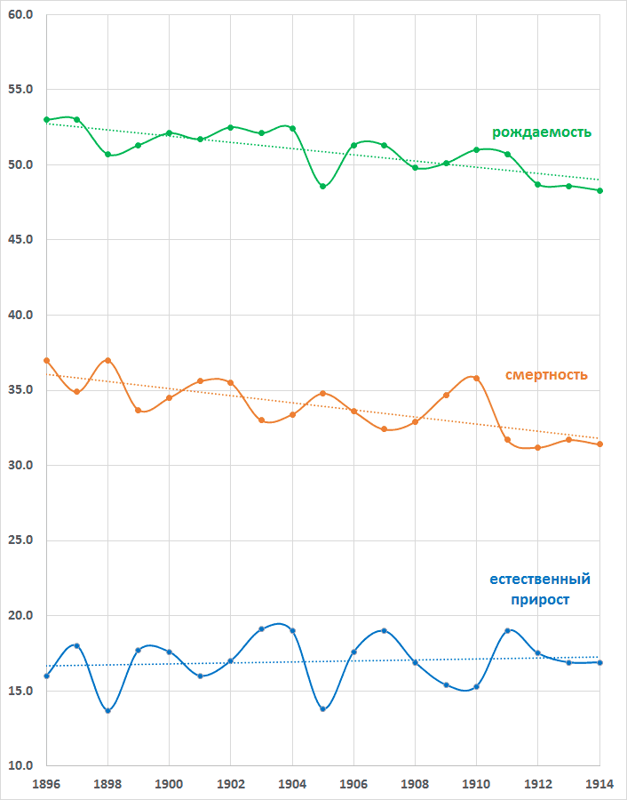

1 Р.И. Сифман, "Динамика численности населения России за 1897-1914 гг." // "Брачность, рождаемость, смертность в России и в СССР", ред. А.Г. Вишневский, М. : Статистика, 1977, стр. 62-82.При всей ценности исследования Сифман оно страдает известной степенью непрозрачности, важнее же всего, оно освещает только численность и темп естественного прироста (и эмиграционной механической убыли) населения, но не уровни рождаемости и смертности по отдельности, и не их динамику. Кроме того, Сифман проводит исчисление только для совокупной территории в границах русского государства 1913 года, но не для территорий будущих границ РСФСР и СССР, что не позволяет произвести временну́ю стыковку с последующей демографической историей населения этих территорий.1
1 Можно предположить, что при более благоприятных условиях Сифман расширила бы свои расчёты, и отказалась от их продолжения лишь столкнувшись с невозможностью опубликовать итоги даже начального этапа своей работы.Другие проводившиеся исследования (А.Г. Рашин, "Население России за 100 лет (1811-1913"; цикл книг С.Д. Морозова "Центральная Россия в 1897-1917 гг.") ограничены по территориальному охвату и не предоставляют сведений для территорий в границах РСФСР или СССР, с которыми они поэтому неспоставимы по исследуемому демографическому объёму.
Цифры ежегодников часто содержат в значительном количестве
опечатки и арифметические ошибки. Эти ошибки и опечатки выявимы и
исправимы благодаря наличию кросс-проверочных данных. Число
рождений и смертей проверяется сравнением цифр по муж. и жен.
полам раздельно и общей величины по обеим полам, а также общей
суммой для каждой из колонок. Уровни рождаемости и смертности
проверяемы и исправимы вычислением из данных о числе рождений и
смертей, однако такое исчисление возможно лишь для томов начиная с
1899 года. Для вычисления рождаемости и смертности в 1898 и 1897
гг. могут быть привлечены данные переписи 1897 года о численности
населения в губерниях.
годы
данных
ежегодник
примечание
1899
1904 стр. 106-109
1900
1905 стр. 120-123
1901
1906 стр. 101-104
1902
1907 стр. 87-90
1903
1908 стр. 87-90
1904
1909 стр. 92-98
1900-1904
1910 стр. 596-599 только уровни рождаемости и смертности,
но не число родившихся и умерших,
и без разбивки по полу
1905
1910 стр. 600-601
1906
1911 стр. II/1-2
1907-1909
1912 стр. II/1-4
1910-1911
1913 стр. II/1-3
1912
1914 стр. II/1-2
1913
1915 стр. II/1-2
1914
1916 стр. II/91-93
Для 1904-1910 гг. величины числа смертей и рождений опубликованные в "Ежегодниках России" и "Статистических Ежегодниках России" отличаются от опубликованных ранее в "Движении населения...". Для большинства лет величина различия по сумме 50 губерний остаётся в пределах 0.1-0.3%, однако сосредоточена в нескольких губерниях, для которых различие более объёмно. Для 1909 года приводимое число умерших различается на 1%, а для 1910 на 1.6%, причём различия для этих лет распределены по большому числу губерний. Причины различия в "Ежегодниках" не поясняются.Рождаемость и смертность и естественный прирост в "Движении населения..." исчисляются относительно численности населения указанного в томах как:
2. Издававшиеся ЦСК "Ежегодники России" (1904-1910) и "Статистические
ежегодники
России" (1911-1916), а также "Юбилейный сборник
Центрального Статистического Комитета Министерства Внутренних
Дел" (1913) охватывают всё Россию, включая Сибирь, Кавказ и
Среднюю Азию, а также Финляндию.
Подборка: https://archive.org/details/csk_ezhegodniki
Ежегодники содержат сведения о численности населения на начало
года с 1904 по 1917 для всех областей Империи, с разбивкой на
городское и сельское и по полам (для 1917 без половой разбивки),
но не содержат прямых данных о естественном движении
(число рождений и смертей).
Данные о естественном движении (число рождений и смертей)
приводятся только для 50 европейских губерний, и только для
1899-1914 гг.
О применяемом способе исчисления наличного населения Ежегодник
пишет:
«Вычисления произведены, главным образом, по данным о "естественном приросте", ежегодно помещаемым в приложениях ко всеподданейшим отчётам губернаторов. Прибавкой к основной цифре одного естественного прироста можно получить более или менее точную, только общую цифру населения всего государства; что же касается отдельных его частей, т.е. губерний и уездов. то, вследствие отсутствия данных о переселении из одной губернии в другую, цифра населения по районам не может считаться особенно достоверной» (1904, стр. 81) .
«Население Российской Империи, подобно предыдущему году, вычислено на основании цифр населения, полученных переписью 1897 года и ежегодного естественного прироста населения. Механическое движение не было принято во внимание, за неимением данных по этому вопросу» (1905, стр. 66; то же повторено для 1906-1908).
«Население Российской Империи, подобно предъидущему году, вычислено на основании цифр насѳления, полученныхъ переписью 1897 года и ежегодного естественного прироста населения. Механическое джвижение было принято во внимание, только тамъ, где имелись хотя какие либо данные по этому предмету» (1909-1910).
В ежегодниках 1911-1916 гг. пояснение о методе расчёта на приводится.
Юбилейный сборник ЦСК (1913) поясняет:
Сведения о движении населения, даже естественном, Комитет до сих пор не можете добывать по всей Империи. По 50 губерниям Европейской России сведения получаются ежегодно, но с большими пробелами и недочётами, по некоторым сибирским и среднеазиатским – далеко не ежегодно и ещё с большими пробелами, по многим же губерниям и областям вовсе не имеется сведений по движению населения. Регистрации механическаго движения населения вовсе не ведётся, а потому сведения о передвижении из одной губернии в другую получаются только случайно и неравномерно. ("Юбилейный сборник Центрального Статистического Комитета", стр. 79)
Порядок получения данных о рождениях, смертях и браках следующий: духовенство (православное, католическое, протестанское и пр.) и другие лица и учреждения, ведущие метрические книги, ежегодно доставляют помесячныя выписи из метрических книг в губернские, областные и городские статистические учреждения, которые сводят данные по движению населения в таблицы: по каждому городу и уезду, месяцам совершения событий и исповеданиям. Кроме того, умерших по возрacтам, а в браках – женихов и невест по возрастам и семейному состоянию. Эти первичные таблицы получаются уже Центральным Статистическим Комитетом, где окончательно разрабатываются и пускаются в печать. Кроме того общее число родившихся, умерших и браков по отдельным городам и уездам помещается в Приложениях ко Всеподданнейшим Отчетам губернаторов. (стр. 80)
Механическому движению населения ЦСК стал уделять свое внимание лишь с начала текущего столетия. Хотя и раньше, начиная с 90-х годов истекшего столетия, оно приняло значительные размеры, в особенности переселение в Сибирь, но подготовка к предстоявшей в 1897 г. переписи населения, производство и разработка её и издание относящихся к ней трудов поглотили почти все внимание и почти все силы Комитета в течение десяти последующих лет (с конца 1895 по 1904 гг. включит.).
Из отдельных видов механического передвижения населения Комитет избрал предметом своих работ лишь пассажирское движение через внешние границы Империи, эмиграцию в заокеанские страны и переселение в Сибирь. Специальных исследований в этих областях Комитет не производил, в виду чего ему приходилось пользоваться готовыми статистическими материалами других ведомств и заграничными изданиями (по эмиграции) и извлекать из них необходимые для своих Ежегодников сведения. Эти сведения в том виде, как они помещены в Ежегодниках, состоят из статистических данных за отчётный год с сопоставлением их с таковыми за предшествующий год и за последнее пятилетие и из кратких выводов. Сверх того в отдельных Ежегодниках можно найти специальные очерки по каждому из вышеуказанных трех видов механическаго передвижения населения (см. ниже), в которых дёется исторический обзор развития отдельных видов передвижения, соответствующие цифровые данные, охватывающие несколько десятилетий, способы собирания статистических данных по ним, оценка этих цифровых данных и т.д. (стр. 96)
Р.И. Сифман пишет о данных ЦСК:
«После переписи 1897 г. ЦСК регулярно публиковал в своих ежегодниках данные о численности населения как по России в целом, так и по административным подразделениям (губерниям, уездам). Однако даже при самой поверхностной критической проверке этих данных они оказываются настолько неубедительными, что возможность их использования была поставлена под сомнение всеми авторами, касавшимися этого вопроса. Если произвести простейший контроль опубликованных ЦСК данных, т. е. сопоставить разницу между численностью населения на начало и конец года с превышением числа родившихся над числом умерших, то оказывается, что общий прирост населения как по территории государства в целом, так и по Европейской России за ряд лет на сотни тысяч, а иногда и на миллионы превышает естественный прирост, хотя очевидно, что этого не могло быть, поскольку сальдо внешней миграции России вообще очень незначительное по сравнению с естественным приростом было отрицательным, а из Европейской России происходил отлив населения в азиатские губернии.
Известно, что сводные данные о численности населения Российской империи в целом и Европейской России получались ЦСК путем суммирования данных местных расчетов губернских статистических комитетов. Чем руководствовались в этих расчетах на местах, остается неизвестным. В архиве ЦСК, хранившемся в Ленинградском отделении Исторического архива, не удалось обнаружить никаких инструктивных указаний местным органам по вопросу о методах исчисления населения. Нами были просмотрены все дела ЦСК за 1897 – 1914 гг. по разделу статистики населения и не было обнаружено даже никакого упоминания о существовании инструкции.
Судя по тому, что данные ЦСК по отдельным губерниям расходятся с цифрами, опубликованными соответствующими губернскими статистическими комитетами, можно предположить, что сведения, представленные последними, подвергались в ЦСК переработке. Но остается неясным, почему в ЦСК не производили общепринятый контроль местных расчетов, т. е. не сопоставляли их в сумме с балансом естественного прироста и миграции.
Ошибочность исчислений ЦСК явилась, как это указывалось рядом авторов, в основном результатом недостоверности данных о механическом движении населения. В примечаниях к сведениям о населении в ежегодниках ЦСК с 1909 г. появилось указание о включении в расчет механического движения там «где имелись какие-либо данные по этому вопросу». До этого отмечалось, что «механическое движение не было принято во внимание за неимением данных». Фактически механический прирост начал, по-видимому, включаться в расчеты раньше, так как уже с 1903 г. общий прирост населения превышал естественный прирост».
(Сифман, "Динамика численности населения России за 1897-1914 гг.", стр. 62-63)
Действительно, опубликованный ЦСК прирост численности населения
50 европейских губерний за 1904-1914 гг. почти на четверть
превосходил их естественный прирост. Половина этого избытка
приходится на оценки населения для 1 января 1914 и 1915 гг.
опубликованные уже во время войны, и вероятно вызвана военными
сложностями обработки данных. Но и за период 1904-1912 гг. рост
численности населения 50 европейских губерний по оценке ЦСК
превосходит их естественный прирост на 14%. Разница не могла
создаваться механическим движением между губерниями, т.к. из 50
губерний существовал общий отток переселенцев в Сибирь,
на Кавказ и в Среднюю Азию, а кроме того эмиграционный отток за
границу (последний в основном из губерний еврейской черты
оседлости, а также нееврейский отток из Литвы, привислинских и
остзейских губерний [но привислинские губернии не входят в число
50]); таким образом, рост населения 50 европейских губерний должен
быть меньше, а не больше их естественного прироста.
год естественный прирост
50 губерний
согласно "Ежегодникам России"
прирост населения
50 губерний
согласно "Движению населения
в Европейской России"
разница 1904 1,970,498 1,974,900 4,402 1905 1,424,787 1,728,800 304,013 1906 1,867,028 1,924,900 57,872 1907 2,113,094 2,561,500 448,406 1908 1,857,385 2,664,500 807,115 1909 1,713,331 2,185,100 471,769 1910 1,563,209 1,897,400 334,191 1911 2,043,390 1,962,700 -80,690 1912 2,052,124 2,065,100 12,976 1913 1,979,573 3,160,700 1,181,127 1914 2,027,002 2,932,500 905,498 1904-1912
16,604,846
18,964,900
2,360,054
1904-1914 20,611,421 25,058,100 4,446,679
Сифман перечисляет (стр. 63-65) категории недоучёта механического движения составившие эту аберацию.
"Отчет медицинского департамента Министерства внутренних дел за ... год" (оцифрованы в Excel 1888-1895 годы, непрерывные бумажные выпуски простираются до 1877, с возможными перерывами до 1856 года)Каждый выпуск приводит сведения о числе рождений и смертей за год и оценку численности населения на начало следующего года. Таким образом, выпуск за 1914 год содержит оценку численности на 1 января 1915 года. Сведения приводятся для каждой области и губернии, включая Европейскую часть России, Сибирь, Кавказ, Среднюю Азию, Польшу, но исключая Финляндию. Также приводятся суммарные значения для групп губерний, т.е. географических таксонов (Европейской Росии, Азиатской России, Средней Азии, Сибири, земских губерний, неземских губерний, привислинских губерний). Начиная с 1902 года приводится разбивка данных по полам и по типу местности (города и уезды).
"Отчет о состоянии народного здравия и организации врачебной помощи в России за 1896-1901 год"
"Отчет о состоянии народного здравия и организации врачебной помощи [населению] в России за ... год" (1902-1914)
«Исчисления ЦСК после переписи 1897 г. подвергались критике уже в период их публикации. Так, Управление Главного врачебного инспектора МВД (в дальнейшем УГВИ) систематически приводило в своих отчетах параллельно с данными ЦСК собственные данные о численности населения, рассчитанные на основе естественного прироста.На чём основано последнее утверждение Сифман, скзать затруднительно, т.к. помимо того, что ЦСК и УГВИ публиковали оценки численности населения на начало календарного года, а не на середину, обе оценки (ЦСК и УГВИ) весьма близко совпадают для большинства лет. Наибольшее расхождение имеется для 1904 года (2.4 млн. чел. или 1.7%); оно меньше, но велико также для 1905; затем начиная с 1906 г. уменьшается до доли процента. Для 1 января 1913 года расхождение оценкок составляет 133 тыс. чел. – величину далёкую от 6.3 млн. Источник величин использованный Сифман для её табл. 2 остаётся неясным, и "Отчёты" УГВИ, на которые она ссылается, им во всяком случае не являются. В частности, величина 166,7 млн. для 1913 г. не содержится в выпусках "Отчётов" за 1912-1914 гг., но величины таблицы 2 из статьи Сифман не совпадают также и с собственными расчётами Сифман на основании сведений УГВИ.
Управление Главного врачебного инспектора получало непосредственно от местных статистических комитетов всей империи, т. е. включая Польшу, Кавказ, Сибирь и Среднюю Азию, предварительные данные о естественном движении населения, которые и приводило в своих публикациях — "Управление Главного врачебного инспектора Министерства Внутренних Дел. Отчет о состоянии народного здравия и организации врачебной помощи в России".
По отчетам УГВИ на середину 1913 г. численность населения по империи в целом (без Финляндии) была на 6,3 млн. меньше, чем по данным ЦСК (см. табл. 2)».
(Сифман, "Динамика численности населения России за 1897-1914 гг.", стр. 66)
Оценки ЦСК и УГВИ для совокупной численности населения 50 европейских губерний также близки:Население Империи без Финляндии по отчётам ЦСК и УГВИ,
на 1 января соотв. года
год ЦСК УГВИ 1904 141,403,900 143,848,185 1905 143,980,100 145,954,605 1906 146,442,100 147,181,326 1907 149,084,000 150,319,390 1908 152,464,700 153,334,999 1909 157,079,500 157,185,556 1910 160,748,400 160,229,948 1911 163,919,000 164,190,147 1912 167,919,800 167,520,069 1913 170,902,900 170,768,546 1914 175,137,800 174,094,888
Используемые ЦСК и УГВИ сведения о числе рождений и смертей в 50 европейских губерниях тoже почти совпадают для мирных лет и начинают расходиться лишь для 1913 и 1914 г., видимо из-за военных условий сбора и обработки статистики (выпуски изданий ЦСК и УГВИ с данными для 1913 года вышли в 1915 году).
год ЦСК УГВИ % разницы 1904 105,650,900 106,920,206 -1.2 1905 107,625,800 108,023,116 -0.4 1906 109,354,600 109,478,672 -0.1 1907 111,279,500 111,252,311 0.0 1908 113,841,000 113,309,370 0.5 1909 116,505,500 115,741,402 0.7 1910 118,690,600 117,419,438 1.1 1911 120,588,000 119,521,177 0.9 1912 122,550,700 121,585,703 0.8 1913 124,615,800 123,770,088 0.7 1914 127,776,500 126,531,106 1.0 1915 130,709,000 126,519,283 3.3
Замыкая вопрос о странном замечании Сифман, отметим, что она написала цитированную статью в начале 1930-х, однако с начала 1930-х гг. демографические исследования в СССР были прекращены, статья осталась неопубликованной и увидела свет лишь в 1977 году, а на следующий год автора не стало. Даже если бы в СССР 1970-х гг. имелись немногочисленные исторические демографы способные обратить внимание на отмеченную выше странность статьи, времени и возможности обсудить её с автором у них не оставалось.
год число рождений число смертей ЦСК УГВИ %
разницыЦСК УГВИ %
разницы1897 4,692,621 4,695,199 0.1 2,976,453 2,967,127 -0.3 1898 4,625,558 4,603,156 -0.5 3,156,303 3,148,842 -0.2 1899 4,764,678 4,733,264 -0.7 3,013,114 2,977,870 -1.2 1900 4,853,804 4,855,380 0.0 3,055,030 3,037,501 -0.6 1901 4,801,190 5,002,545 4.1 3,218,501 3,209,286 -0.3 1902 4,993,248 5,007,385 0.3 3,204,333 3,208,623 0.1 1903 4,978,305 4,971,337 -0.1 3,103,213 3,095,224 -0.3 1904 5,123,644 5,104,730 -0.4 3,153,146 3,141,559 -0.4 1905 4,830,252 4,810,476 -0.4 3,405,465 3,400,979 -0.1 1906 5,120,607 5,112,153 -0.2 3,253,579 3,264,797 0.3 1907 5,258,711 5,240,002 -0.4 3,145,617 3,158,708 0.4 1908 5,049,313 5,066,457 0.3 3,191,928 3,200,938 0.3 1909 5,130,913 5,106,895 -0.5 3,417,582 3,403,246 -0.4 1910 5,220,380 5,240,115 0.4 3,657,171 3,664,585 0.2 1911 5,265,665 5,299,886 0.6 3,222,275 3,224,320 0.1 1912 5,238,186 5,241,162 0.1 3,186,062 3,176,097 -0.3 1913 5,452,276 5,250,677 -3.8 3,472,703 3,339,938 -3.9 1914 5,293,695 4,935,179 -7.0 3,266,693 3,008,835 -8.2
Погодовой естественный прирост и изменение численности населения
по территории Империи согласно "Отчётам..." УГВИ
годы естественный
приростприрост
численности
населенияразница 1893 1,653,806 1,712,495 58,689 1894 1,717,563 1,830,733 113,170 1895 1,743,709 2,286,628 542,919 1896 2,000,151 1,457,701 -542,450 1897 2,189,512 2,818,162 628,650 1898 1,893,604 3,260,356 1,366,752 1899 2,179,516 2,562,684 383,168 1900 2,280,630 2,438,882 158,252 1901 2,305,853 2,133,048 -172,805 1902 2,350,358 1,635,692 -714,666 1903 2,457,332 2,778,691 321,359 1904 2,464,258 2,106,420 -357,838 1905 1,854,326 1,226,721 -627,605 1906 2,408,451 3,138,064 729,613 1907 2,695,142 3,015,609 320,467 1908 2,468,607 3,850,557 1,381,950 1909 2,318,379 3,044,392 726,013 1910 2,200,521 3,960,199 1,759,678 1911 2,787,234 3,329,922 542,688 1912 2,821,926 3,248,477 426,551 1913 2,507,289 3,326,342 819,053 1896-1913 42,183,089 49,331,919 7,148,830
Даже если дисконтировать скачок для 1897-1899 лет как вызванный вероятно перекалибровкой точки отсчёта от прежней предположительной численности к численности по предварительным итогам переписи 1897 года, всё равно сальдо избытка за последующие 1900-1913 гг. превосходит 5 млн. Таким образом, ни расчёты УГВИ, ни расчёты ЦСК для численности населения нельзя признать вполне удовлетворительными. Их погрешность умерена: для территории всей Империи расчётное превышение составляет около 3-4% действительной численности населения, а принимая во внимание компенсирующий его недоучёт населения окраинных областей (прежде всего Средней Азии, но также Сибири и других окраин), на деле меньшую величину. Тем не менее желательно заново пересчитать численность населения, и на её основе темп естественного движения, что мы далее и предпримем.
1896 земские губернии рождения: 3,422,540 vs 3,364,640 (merged vs. published value, diff: 57,900)Хотя эти расхождения малы сравнительно с суммарным значением для крупной агрегатной территории (в т.ч. и границ РСФСР-1991), они мешают проверке значений для отдельных губерний.
1897 Европейская Россия смерти: 3,197,561 vs 3,216,561 (merged vs. published value, diff: 19,000)
1897 земские губернии рождения: 3,457,703 vs 3,373,983 (merged vs. published value, diff: 83,720)
1898 земские губернии смерти: 2,431,942 vs 2,399,883 (merged vs. published value, diff: 32,059)
1900 земские губернии рождения: 3,562,257 vs 3,542,257 (merged vs. published value, diff: 20,000)
1901 земские губернии рождения: 3,755,973 vs 3,712,816 (merged vs. published value, diff: 43,157)
1901 привислинские губернии население 11,250,994 vs 11,403,994 (merged vs. published value, diff: 153,000)
Хотя перепады внешне незначительны по величине сравнительно с численностью населения, они указывают на имевшуюся в УГВИ проблему исчисления.
год Астраханская Владимирская Вологодская Вятская Курская Олонецкая 1897 1898 978,208 1,694,156 1,385,314 3,135,885 2,436,447 371,536 1899 981,777 1,721,704 1,438,395 3,218,022 2,458,154 385,787 1900 1,009,138 1,765,761 1,443,935 3,251,990 2,475,542 391,825 1901 1,017,199 1,802,560 1,445,470 3,306,802 2,534,285 388,152 1902 1,064,318 1,832,612 1,458,668 3,326,736 2,574,308 396,402 1903 1,062,937 1,869,546 1,446,168 3,355,847 2,621,290 396,921 1904 1,062,937 1,868,219 1,446,168 3,395,500 2,676,258 402,179 1905 1,156,217 1,880,554 1,468,565 3,428,685 2,737,706 406,158 1906 1,169,448 1,902,702 1,496,984 3,470,529 2,677,772 408,681 1907 1,191,197 1,944,349 1,511,005 3,519,838 2,733,395 413,571 1908 1,207,649 1,974,713 1,530,227 3,557,419 2,875,021 419,245 1909 1,241,432 2,008,518 1,577,216 3,611,141 2,896,063 423,220 1910 1,281,626 2,050,527 1,577,216 3,590,663 2,900,459 424,391 1911 1,307,313 2,072,806 1,601,866 3,665,193 2,917,240 431,060 1912 1,336,872 2,106,177 1,629,209 3,703,885 2,959,208 434,468 1913 1,336,343 2,221,241 1,654,341 3,743,259 3,010,013 444,440 1914 1,347,837 2,251,149 1,679,705 3,813,263 3,065,857 451,998 1915 1,439,827 2,018,015 1,704,900 3,791,678 3,121,260 447,701 год Пермская Саратовская Смоленская Ставропольская Тобольская Ярославская 1897 1898 3,048,839 2,468,128 1,590,192 876,566 1,438,484 1,211,469 1899 3,091,728 2,492,150 1,671,001 912,639 1,474,804 1,236,763 1900 3,163,696 2,517,470 1,659,349 933,479 1,493,244 1,259,374 1901 3,222,918 2,566,124 1,699,349 952,317 1,523,244 1,278,549 1902 3,269,537 2,640,829 1,723,317 971,232 1,555,652 1,298,150 1903 3,269,594 2,687,001 1,785,399 996,280 1,638,360 1,235,925 1904 3,327,585 2,796,542 1,812,491 1,024,079 1,653,515 1,345,471 1905 3,385,651 2,842,431 1,823,069 1,056,015 1,685,921 1,258,297 1906 3,435,307 2,896,115 1,833,903 1,076,875 1,808,935 1,235,926 1907 3,486,096 2,903,301 1,862,162 1,108,915 1,747,254 1,240,639 1908 3,536,291 2,973,036 1,862,162 1,137,362 1,747,254 1,261,582 1909 3,504,834 3,102,911 1,940,347 1,175,415 1,798,814 1,353,088 1910 3,541,402 3,158,816 1,976,092 1,200,800 1,898,053 1,315,916 1911 3,611,911 3,201,018 2,003,070 1,198,948 1,975,239 1,359,165 1912 3,682,470 3,238,521 2,042,174 1,230,591 2,038,755 1,383,498 1913 3,732,681 3,285,154 2,081,544 1,258,525 2,107,226 1,437,029 1914 3,831,588 3,281,606 2,110,384 1,283,034 2,103,294 1,425,685 1915 3,883,643 3,327,984 2,021,042 1,293,652 2,125,692 1,387,387
Число переселенцев и ходаков за 1896-1916 гг.
(по Ежегоднику ЦСК 1916, см. ниже)
Основные статистикие сведения о крестьянском переселении приводятся в изданиях Переселенческого управления
куда
прямых обратных сальдо % сальдо в Сибирь 3,466,918 868,214 2,598,704 67.2 в Среднюю Азию 1,480,370 436,231 1,044,139 27.0 на Кавказ 85,454
85,454 2.2 в Приуралье
221,214 79,854 141,360 3.7 итого 5,253,956 1,384,299 3,869,657 100.0
"Итоги переселенческого движения за время с 1896 по 1909 г. (включительно)", сост. Н. Турчанинов, С.-Петербург, 1910, стр. 2-69содержащих погодовые сведения (за 1896-1914 гг.)
"Итоги переселенческого движения за время с 1810 по 1914 г. (включительно)", сост. Н. Турчанинов и А. Домрачев, Петроград, 1916, стр. 2-69
«Не регистрировались переселенцы, прибывшие в Сибирь по грунтовым дорогам или шедшие в Степной край через станцию Кинель. Часть крестьян ускользнула от регистрации, так как ехала в Сибирь по "дорогому" тарифу. Следует отметить, что обратные переселенцы практически всегда ехали по переселенческим документам, а, значит, попадали в официальную статистику.Кроме того, данные Переселенческого управления не включали переселенцев отправлявшихся на Дальний Восток морским путём, хотя их число упоминается в примечании в Ежегоднике ЦСК 1908 года (стр. 94), но только за 1883-1900 г., за дальнейшие годы данных не имеется.
Недостатки системы учета самовольных переселенцев были отмечены в монографии Тюкавкина. Переселенцев приходилось считать "на глазок", по головам, по числу отпущенных обозов на переселенческом пункте, так как летом ежедневно приходило по 2-10 тыс. человек. Нередки были случаи, когда семейные переселенцы брали свидетельства ходоков и везли остальных членов семьи по "дорогому тарифу". В числе прибывших в первом полугодии 1907 г. в Томскую губ., таких было 30%. Таким образом, численность прямых переселенцев, фактически прибывших в Сибирь, должна быть скорректирована в сторону увеличения, а выехавших обратно – уменьшена».
(Д.Н. Белянин, "Переселение крестьян в Сибирь в годы столыпинской аграрной реформы" // Российская история, 2011 №1, стр. 87-88)
и включают данные о:
выпуск
страницы
обозреваемые
годы
1904
115-121
1897-1903
1905
128-133
1897-1903
1907
XXII-LXIX
1885-1907
1908
94-111
1896-1907
1911
II/3-16
1909-1911
1912
II/5-20
1906-1912
1913
II/6-40
1885-1913
1914
II/3-27
1885-1914
1915
II/6-37
1910-1915 + обзор 1860-1815
1916
I/94-112
1896-1916
Погодовые данные "Итогов переселенческого движения..." находятся в файле inner-migration-yearly.xlsx.Сумма убывших из всех губерний и областей находится в более-менее удовлетворительном согласии с числом прибывших: почти все уехавшие куда-то приехали. Расхождение за период 1896-1916 составляет в сумме около 1%, но в отдельные годы выше, особенно в 1897 и 1903. По сравнению с естественным приростом, однако, это расхождение имеет исчезающе малую величину.
Данные Ежегодника ЦСК 1916 – в файле inner-migration-coarse.xlsx и его сокращённой версии inner-migration-coarse-loadable.xlsx.
Модуль rtss.pre1917.data.InnerMigration содержит функции возвращающие миграционные отток, приток и сальдо для указанных губернии и года.
Воспользовавшись этими сведениями, мы можем оценить баланс числа переселенцев и ходаков извне будуших границ РСФСР-1991 в эти границы за двадцатилетие 1896-1916 гг. и в отдельные годы или подгруппы лет, т.е. механический прирост наличного населения в границах РСФСР-1991.
годы всего
прибыливсего
убылираcхождение
чел.
чел. %
1896 220,171 215,212 4,959 2.3 1897 120,435 110,273 10,162 8.8 1898 256,102 249,159 6,943 2.7 1899 281,797 280,507 1,290 0.5 1900 302,679 294,898 7,781 2.6 1901 167,504 170,616 -3,112 -1.8 1902 152,442 156,355 -3,913 -2.5 1903 155,898 167,552 -11,654 -7.2 1904 58,447 61,772 -3,325 -5.5 1905 52,585 54,837 -2,252 -4.2 1906 262,430 258,103 4,327 1.7 1907 693,088 680,638 12,450 1.8 1908 879,242 865,241 14,001 1.6 1909 846,174 839,794 6,380 0.8 1910 498,138 494,778 3,360 0.7 1911 366,905 364,330 2,575 0.7 1912 356,612 348,527 8,085 2.3 1913 452,153 442,023 10,130 2.3 1914 432,245 427,776 4,469 1.0 1915 40,287 40,269 18 0.0 1916 18,665 18,904 -239 -1.3 1896-1916 6,613,999 6,541,564 72,435 1.1
Сальдо миграционного баланса территории в границах РСФСР-1991
и остальных территорий Империи
Имеющие данные о крестьянском переселении охватывают бо́льшую часть внутренней миграции, но не всю её целиком. Даже для крестьянского переселения сведения неполны, т.к. до 1913 года переселенцы на побочных путях не переписывались. Более важно что сведения Переселенческого управления не охватывают миграцию рабочих в промышленные районы центральной России и в Пермскую губернию, на Донбасс, в Бакинский промышленный район и другие промышленные области. Сведения о рабочей миграции имеются лишь изредка и отрывочно
годы РСФСР-1991 другие
территориирасхождение
1896 59,597 -54,638 4,959 1897 26,140 -15,978 10,162 1898 33,117 -26,174 6,943 1899 23,280 -21,990 1,290 1900 78,445 -70,664 7,781 1901 42,290 -45,402 -3,112 1902 35,761 -39,674 -3,913 1903 39,246 -50,900 -11,654 1904 3,394 -6,719 -3,325 1905 7,398 -9,650 -2,252 1906 18,702 -14,375 4,327 1907 208,453 -196,003 12,450 1908 185,790 -171,789 14,001 1909 153,991 -147,611 6,380 1910 104,266 -100,906 3,360 1911 50,253 -47,678 2,575 1912 28,790 -20,705 8,085 1913 21,485 -11,355 10,130 1914 16,643 -12,174 4,469 1915 -369 412 43 1916 -435 196 -239 1896-1916 1,136,237 -1,063,777 72,460 в год 54,107 -50,656 3,450
Напр: "Движение рабочих на Дальний Восток в 1912 году. Сборник цифровых материалов", Министерство земледелия, Главное управление землеустройства и земледелия. Восточный район передвижения переселенцев, Иркутск: тип. И.П. Казанцева, 1913; ""Движение рабочих на Дальний Восток в 1913 году. Цифровые материалы, разработанные под руководством и редакцией Ин. Воробьёва", Министерство земледелия, Главное управление землеустройства и земледелия. Восточный район передвижения переселенцев, Иркутск: тип. т-ва "Гранит", 1918.систематически же и представительно их не имеется. Однако сальдо крестьянского переселения составляет менее 5% от величины естественного демографического прироста населения на территории границ РСФСР-1991 за 1896-1916, и можно полагать, что рабочее переселение внесёт ещё меньшую поправку.
Россия вела статистику приездов и отъездов через границу, раздельно по иностранным и русским подданным, однако не вела учёта эмиграции как таковой. Согласно немецкой портовой статитике, основным направлением отъезда из России являлись США, принимавшие 95-96% всех эмигрировавших из России (ЦСК 1904:129, 1906:115, 1909:xxix-xxx). На долю остальных стран (Канады, Аргентины, Бразилии, южной Африки и др.) приходились оставшиеся 4-5%. Хотя некоторая часть эмигрантов могла следовать из США транзитно в Канаду, но на долю США во всяком случае приходилось около 90% эмиграции из России (при этом некоторая часть эмигрантов направлявшихся на поселение в США, наоборот, ехала через канадские порты).
выпуск
страницы
обозреваемые
годы
1904
122-3, 128-129
1897-1902
1906
114-115, 108-109
1899-1904
1909
CLXXVII-CLXXXII
1821-1908
1910
XXIX-CXIII
1821-1909
1911
II/17-21
1905-1910
1912
II/21-26
1906-1911
1913
II/41-46
1901-1911
фин. год армяне финны немцы греки евреи литовцы поляки русские русины скандинавы всего другие 1896 0 6,275 3,602 1 21,764 5,706 13,086 765 9 857 52,136 72 1897 0 3,609 2,071 0 12,516 3,281 7,525 440 5 493 29,981 41 1898 0 4,159 2,387 0 14,424 3,782 8,673 507 6 568 34,554 48 1899 0 6,048 5,383 1 24,275 6,838 15,517 1,657 29 1,012 60,982 222 1900 1 12,515 5,349 2 37,011 10,297 22,500 1,165 0 1,859 90,787 88 1901 0 9,966 5,643 0 37,660 8,805 21,475 655 12 1,025 85,257 16 1902 0 13,854 8,542 0 37,846 9,975 33,859 1,536 0 1,727 107,347 8 1903 0 18,776 10,485 0 47,689 14,420 39,548 3,565 24 1,571 136,093 15 1904 17 10,077 7,128 3 77,544 12,707 32,577 3,907 173 871 145,141 137 1905 10 16,671 6,722 5 92,388 17,649 47,224 3,278 178 690 184,897 82 1906 130 13,461 10,279 15 125,234 13,697 46,204 5,282 259 937 215,665 167 1907 341 14,311 13,480 46 114,932 24,811 73,122 16,085 150 1,416 258,943 249 1908 62 6,303 10,009 24 71,978 13,270 37,947 16,324 37 527 156,711 230 1909 50 11,202 7,781 5 39,150 14,595 37,770 9,099 70 591 120,460 147 1910 52 14,999 10,016 3 59,824 21,676 63,635 14,768 102 1,398 186,792 319 1911 152 8,942 8,779 29 65,472 16,210 40,193 17,581 196 730 158,721 437 1912 250 5,709 11,031 9 58,389 13,756 51,244 21,101 384 414 162,395 108 1913 909 11,156 17,857 30 74,033 23,873 112,345 48,472 1,074 892 291,040 399 1914 872 10,968 9,889 63 102,638 20,808 66,278 40,241 2,543 743 255,660 617 1915 41 1,650 905 14 14,496 2,218 4,486 2,030 158 121 26,187 68 1916 44 3,834 63 2 2,138 136 277 1,026 2 267 7,842 53 1917 103 3,745 39 11 6,801 73 360 1,006 7 455 12,716 116
"Литовцы" обозначают литовцев и латышей.Сведения о разбивке по народностям начали собираться только с 1899 фин. года. Для 1896-1898 фин. гг. мы располагаем только общим числом иммигрантов из России (Russia proper + Finland + Poland). Помеченные голубым фоном значения для 1896-1898 гг. вычислены в предположении, что пропорция народностей в эти годы была примерно такова же, как в среднем за 1899-1901 гг. Это предположение не обязательно точно: между 1896 и 1897-1898 гг. произошло значительное изменение иммигрантов по местности исхода
"Скандинавы" означают норвежцев, шведов и датчан.
Русские даются без деления на великорусов, малорусов и белорусов.
Подавстрийские по месту рождения русские, указавшие однако на свою связь с Россией, обозначаются как "русины".
Большинство русинов прибывали в США из Австро-Венгрии, но начиная с 1912 года возросло число русинов прибывавших из России.
Как пояснено в следующей главе (об иммиграции в Россию), существовала обширная трансграничная миграция русинов между Австрией и Россией, а также иммиграция русинов в Россию; небольшая часть их затем эмигрировала в США.
однако это лучшая оценка, которую мы в состоянии сделать. В силу сравнительной малости эмиграции в 1896-1898 гг., допущенная погрешность не скажется заметным образом на вычислении населения губерний России и его движения.
фин.
годRussia
properFinland Poland Rp +
F + P1896 45,137 6,308 691 52,136 1897 22,750 3,066 4,165 29,981 1898 27,221 2,607 4,726 34,554
календ.
годармяне финны немцы греки евреи литовцы поляки русские русины скандинавы всего другие 1896 0 4,942 2,837 1 17,140 4,493 10,305 602 7 675 41,059 56 1897 0 3,884 2,229 0 13,470 3,531 8,099 473 6 530 32,268 44 1898 0 5,103 3,885 1 19,350 5,310 12,095 1,082 17 790 47,768 135 1899 1 9,282 5,366 2 30,643 8,568 19,009 1,411 15 1,436 75,885 155 1900 1 11,241 5,496 1 37,336 9,551 21,988 910 6 1,442 88,022 52 1901 0 11,910 7,093 0 37,753 9,390 27,667 1,096 6 1,376 96,302 12 1902 0 16,315 9,514 0 42,768 12,198 36,704 2,551 12 1,649 121,720 12 1903 9 14,427 8,807 2 62,617 13,564 36,063 3,736 99 1,221 140,617 76 1904 14 13,374 6,925 4 84,966 15,178 39,901 3,593 176 781 165,019 110 1905 70 15,066 8,501 10 108,811 15,673 46,714 4,280 219 814 200,281 125 1906 236 13,886 11,880 31 120,083 19,254 59,663 10,684 205 1,177 237,304 208 1907 202 10,307 11,745 35 93,455 19,041 55,535 16,205 94 972 207,827 240 1908 56 8,753 8,895 15 55,564 13,933 37,859 12,712 54 559 138,586 189 1909 51 13,101 8,899 4 49,487 18,136 50,703 11,934 86 995 153,626 233 1910 102 11,971 9,398 16 62,648 18,943 51,914 16,175 149 1,064 172,757 378 1911 201 7,326 9,905 19 61,931 14,983 45,719 19,341 290 572 160,558 273 1912 580 8,433 14,444 20 66,211 18,815 81,795 34,787 729 653 226,718 254 1913 891 11,062 13,873 47 88,336 22,341 89,312 44,357 1,809 818 273,350 508 1914 457 6,309 5,397 39 58,567 11,513 35,382 21,136 1,351 432 140,924 343 1915 43 2,742 484 8 8,317 1,177 2,382 1,528 80 194 17,015 61 1916 74 3,790 51 7 4,470 105 319 1,016 5 361 10,279 85 1896-1916 2,983 203,220 155,620 258 1,123,920 255,693 769,122 209,604 5,410 18,508 2,747,881 3,545 % 0.1 7.4 5.7 0.0 40.9 9.3 28.0 7.6 0.2 0.7 100.0 0.1
Пересчёт из финансовых в календарные годы выполнен упрощённым способом суммирования половинных величин для каждого из финансовых годов входящих в данный календарный год. Возникающая при этом погрешность временно́ й подвижки пренебрежима для наших конечных целей. Если бы мы желали уменьшить её ещё более, мы могли бы использовать сплайн сохраняющий интегральное значение для каждого из финансово-годовых отрезков и суммировать с высоким разрешением точки попадающие в календарный год.Сведения находятся в файле emigration.xlsx, включая источники сведений (конкретные тома и страницы) и технические примечания.
«Подавляющая часть русских в США составляла армию так называемых "трудовых рабочих", которые отнюдь не стремились остаться здесь на постоянное жительство и при первой же возможности возвращались на родину. Часть же умирала на чужбине [...] В 1908-1910 гг. из США в Россию уехало 14.7 тыс. русских (36.6% прямых мигрантов) [...] В 1908-1913 гг. реэмигранты насчитывали среди [русских] более 29%, а в 1908-1920 гг. обратно уехала почти половина от прямых переселенцев в США (из России выехало 173.0 тыс., а вернулось 78.4 тыс. или 45.3%). Русские иммигранты отправлялись в США, как правило, для заработков (детей и стариков среди них было только 9.7%, женщин – 15%, ремесленников – 9.1%, торговцев – 0.9%). Лишь 4.1% русских иммигрантов повторно приезжали в США». Эта картина подтверждается переписями населения США. (Кабузан, стр. 196-197, 200; доп. см. Осинский, стр. 25-26)Согласно отчётам иммиграционной статистики США (см. подробности и источники в файле emigration.xlsx; тж. агрегацию в NBER стр. 472-473, 476-481), разбивка реэмигрантов из США в Россию по народностям в финансовый год заканчивающийся 30 июня YYYY предстаёт как:
Всего за 1908-1920 гг. обратная эмиграция в Россию составила 18% от числа прибывших иммигрантов (Кабузан стр. 313; NBER стр. 130), можно предполагать, что в предшествовавшие годы соотношение было сходным. Обратная эмиграция из Аргентины в Россию составила за 1857-1924 гг. 42% от числа прибывших иммигрантов (NBER:130).
Перепись США 1910 г. отмечает, что хотя совершеннолетние мужчины рождённые в России составляли вторую по численности группу (после иммигрантов их Германии), но доля приобретших гражданство США в ней была крайне низка, всего 26%, и ещё 13% были в процессе приобретения гражданства (Thirteenth Census Of The United States Taken In The Year 1910, Volume I : Population. General Report And Analysis, Washington DC, 1913 (reprint April, 1915), стр. 1068).
Для 1917 года указанная величина убытия в Россию меньше, чем сумма величин убытия русских, финнов и литовцев, что вероятно связано с транзитным отправлением. Повышая величину "всего" для 1917 года до той же пропорции, в которой она стояла по отношению к (финнам + литовцам + русским) в 1916 году, получаем для 1917 года исправленное значение "всего" равное 8,962 чел.
фин. год армяне финны немцы греки евреи литовцы поляки русские русины скандинавы всего другие 1908 9 3,360 408 7 5,439 3,282 18,187 6,636 50 141 37,777 258 1909 1 1,035 338 2 3,989 1,944 8,421 3,819 30 41 19,707 87 1910 4 692 503 3 3,295 1,765 6,705 4,223 38 22 17,362 112 1911
4,219
2,430
3,838
27,053
1912 18 2,430 519 3 4,448 4,112 14,701 8,139 133 59 34,681 119 1913
3,053
3,276
5,327
26,923
1914 58 2,252 811 5 4,174 5,480 18,779 15,703 67 28 47,451 94 1915 217 727 167 2 873 965 4,694 10,501 40 33 18,297 78 1916 354 379 20 0
45 26 229 4,106 0 11 5,259 89 1917
1,256
38
6,393
5,947
Суммы прибытия, реэмиграции и % реэмиграции за 1908-1917 фин.годы по известным данным (пробел при подсчёте игнорируется как нуль):
фин. год армяне финны немцы греки евреи литовцы поляки русские русины скандинавы всего другие 1908 62 6,303 10,009 24 71,978 13,270 37,947 16,324 37 527 156,711 230 1909 50 11,202 7,781 5 39,150 14,595 37,770 9,099 70 591 120,460 147 1910 52 14,999 10,016 3 59,824 21,676 63,635 14,768 102 1,398 186,792 319 1911
8,942
16,210
17,581
158,721
1912 250 5,709 11,031 9 58,389 13,756 51,244 21,101 384 414 162,395 108 1913
11,156
23,873
48,472
291,040
1914 872 10,968 9,889 63 102,638 20,808 66,278 40,241 2,543 743 255,660 617 1915 41 1,650 905 14 14,496 2,218 4,486 2,030 158 121 26,187 68 1916 44 3,834 63 2 2,138 136 277 1,026 2 267 7,842 53 1917
3,745
73
1,006
12,716
Для 1908-1914 фин. годов реэмиграционные коэффициенты по известным данным имеют величину:
армяне финны немцы греки евреи литовцы поляки русские русины скандинавы всего другие прибытие 1,371 78,508 49,694 120 348,613 126,615 261,637 171,648 3,296 4,061 1,378,524 1,542 реэмиграция 661 19,403 2,766 22 22,263 23,318 71,716 68,685 358 335 243,472 837 % реэмиграции 48.2 24.7 5.6 18.3 6.4 18.4 27.4 40.0 10.9 8.2 17.7 54.3
Как видно, для армян повышенное возвращение в 1915-1917 гг. было вызвано специфическими временными причинами, для остальных коэффициенты малоизменны (хотя русское возвращение было ускорено войной). Мы сохраняем для армян коэффициент 1908-1914 гг., для остальных принимаем среднее значение между величинами для 1908-1914 гг. и 1908-1917 гг.:
армяне финны немцы греки евреи литовцы поляки русские русины скандинавы всего другие прибытие 1,286 69,279 48,726 104 331,979 124,188 256,874 167,586 3,136 3,673 1,331,779 1,421 реэмиграция 90 17,041 2,579 20 21,345 22,289 66,793 47,685 318 291 210,954 670 % реэмиграции 7.0 24.6 5.3 19.2 6.4 17.9 26.0 28.5 10.1 7.9 15.8 47.1
армяне финны немцы греки евреи литовцы поляки русские русины скандинавы всего другие 7.0 24.7 5.4 18.8 6.4 18.2 26.7 34.2 10.5 8.1 16.6 50.7
Величина для "всего" вычислена как зависимая от остальных категория.Предполагая, что процент реэмиграции каждой из народностей в 1896-1907 фин. гг. был таким же, как вычисленный выше, и прилагая этот коэфициент к числу иммигрантов в каждый из 1896-1907 фин. годов, а также к пробелам, получаем следующий баланс чистой иммиграции из России в США (иммиграция минус реэмиграция), в пересчёте для календарных годов:
Для 1908-1914 гг. "всего" перевычисляется как 15.8%, для 1908-1917 как 17.4% (среднее 16.6%), для 1896-1907 как 15.3%.
кал. год армяне финны немцы греки евреи литовцы поляки русские русины скандинавы всего другие 1896 0 3,723 2,683 0 16,041 3,676 7,553 396 6 620 34,728 28 1897 0 2,926 2,108 0 12,607 2,889 5,936 311 5 487 27,293 22 1898 0 3,845 3,674 1 18,110 4,344 8,865 712 16 726 40,359 66 1899 0 6,993 5,075 1 28,679 7,010 13,932 928 13 1,319 64,027 76 1900 0 8,469 5,198 1 34,943 7,814 16,115 598 5 1,325 74,496 26 1901 0 8,973 6,707 0 35,334 7,683 20,278 720 5 1,265 80,972 6 1902 0 12,292 8,997 0 40,027 9,980 26,901 1,677 11 1,516 101,407 6 1903 8 10,869 8,328 1 58,604 11,097 26,432 2,457 88 1,122 119,045 37 1904 13 10,076 6,549 3 79,521 12,418 29,245 2,363 157 717 141,117 54 1905 65 11,351 8,039 8 101,839 12,823 34,238 2,815 196 748 172,183 61 1906 219 10,462 11,235 25 112,388 15,753 43,729 7,026 183 1,081 202,204 103 1907 185 6,863 11,175 27 87,053 15,144 36,677 10,133 61 844 168,208 47 1908 51 6,555 8,522 10 50,850 11,320 24,555 7,484 14 468 109,844 16 1909 49 12,237 8,478 2 45,845 16,281 43,140 7,913 52 963 135,092 134 1910 94 9,515 8,895 12 58,790 16,846 42,907 12,144 119 1,022 150,549 205 1911 186 4,001 9,394 15 57,496 11,712 32,713 13,353 213 511 129,691 96 1912 557 5,691 13,980 17 62,986 15,121 68,113 28,054 639 608 195,916 151 1913 848 8,410 13,263 43 85,247 17,963 73,591 33,842 1,751 788 236,163 418 1914 319 4,820 4,908 35 56,044 8,291 23,646 8,034 1,297 402 108,050 257 1915 -243 2,189 391 7 7,858 682 -80 -5,776 60 172 5,237 -23 1916 -94 2,972 44 9 5,040 73 335 -4,234 5 406 4,676 120 1896-1916 2,259 153,234 147,641 217 1,055,303 208,918 578,819 130,949 4,896 17,112 2,301,254 1,906 % 0 6.7 6.4 0.0 45.9 9.1 25.2 5.7 0.2 0.7 100.0 0.1
перепись число уроженцев России в США 1900.6.1 640,743 1910.4.15 1,732,462 разница 1,091,719
Twelfth Census Of The United States, Taken In The Year 1900, Volume I, Part I, Washington DC, 1901, стр. 733-735;По нашему вычислению, за тот же период прирост баланса иммиграции из России (иммиграция минус реэмиграция) должен был составить 1,330 тыс. чел. (а без учёта реэмиграции – 1,577 тыс.). Расхождение наличного прироста по переписи с иммиграционным притоком составляет 238 тыс. чел.
Thirteenth Census Of The United States Taken In The Year 1910, Volume I : Population. General Report And Analysis, Washington DC, 1913 (reprint April, 1915), стр.784.
В 1920 г. в США насчитывалось 2.2 млн. уроженцев России и 4.2 млн. лиц российского происхождения; в Канаде в 1921 г. лиц российского происхождения было почти 200 тыс. чел. (Кабузан, стр. 201) или 4.7% от их числа в США.
годы Канада США Аргентина Бразилия Парагвай Австралия Гавайи всего 1896-1900
258,858 6,456 1,978 9
267,301 1901-1905 12,995 678,735 19,739 1,861 18 527
713,875 1906-1910 26,337 938,571 64,754 15,360
2,231
1,047,253 1911-1915 58,290 894,003 55,308 35,055
5,649 404 1,048,709 1896-1915 97,622 2,770,167 146,257 54,254 27 8,407 404 3,077,138 % 3.2 90.0 4.8 1.8 0.0 0.3 0.0 100.0
Хотя эта последняя таблица учитывает только часть потока эмиграции из России, но даёт примерное представление о доле разных стран в ней. В США направлялись 89% иммигрантов. Число эмигрантов из России в Канаду через немцкие порты за 1896-1915 гг. составило, по приведённой выше таблице, 3.8% от числа эмигрантов направлявшихся в США, и одинаково за 1876-1915 годы.
годы Канада и другие
британские владения в
северной АмерикеСША Аргентина Бразилия др. амер.
гос-ваАзия Океания Африка другие
странывсего 1871-1875 4,339 25,985 5 22 9 1 36 1 0 30,398 1876-1880 20,056 2,150 953 4,194 6 2 5 159 0 27,525 1881-1885 184 63,815 60 52 33 2 38 209 0 64,393 1886-1890 1,951 187,089 3,933 29,528 50 10 175 511 0 223,248 1891-1895 7,227 253,103 5,720 10,769 9 37 155 2,238 0 279,258 1896-1900 1,594 162,814 4,991 1,070 36 8 97 3,304 0 173,914 1901-1905 2,787 321,504 11,107 963 7 0 66 3,740 0 340,174 1906-1910 3,292 424,128 35,644 8,232 38 0 87 550 0 471,971 1911-1915 24,693 330,377 31,939 21,559 217 0 117 1,009 0 409,911 1876-1915 66,123 1,770,965 94,352 76,389 405 60 776 11,721 0 2,020,792 % за 1876-1915 3.3 87.6 4.7 3.8 0.0 0.0 0.0 0.6 0.0 100.0 1896-1915 32,366 1,238,823 83,681 31,824 298 8 367 8,603 0 1,395,970 % за 1896-1915 2.3 88.7 6.0 2.3 0.0 0.0 0.0 0.6 0.0 100.0
Приступая к разработке сведений о международной миграции по заказу Мировой организации труда Лиги Наций, специалисты NBER обратились к ЦСУ СССР с предложением разработать сведения о России. Результат разработки, проведённой сотрудниками ЦСУ под руководством В. Осинского, был опубликован в виде издания ЦСУ СССР, сост. В.В. Оболенский (Осинский), "Международные и межконтинентальные миграции в довоенной России и СССР", М. 1928.
- Доп. см. сведения о иммиграции в Канаду по народностям по годам за 1900-1919 в NBER:364-365, однако евреи и поляки даются в ней без разбивки по стране исхода.
- Прямая эмиграция из России в Бразилию по годам 1864-1924 – NBER 550-552. За 1896-1916 гг. составила 52,770 чел. Дополнительно с 1908 г. появляются "украинцы", по-видимому из Австро-Венгрии, не включённые в сумму.
- Прямая эмиграция из России в Австралию по годам 1902-1924 – NBER 952-954; всего за 1902-1916 гг. прибыли 8,904 чел. обозначенных как русские и 178 как поляки, т.е. в сумме 0.6% прибывших за тот же период из России в США. Сведений об обратной реэмиграции не имеется.
- Прямая эмиграция из России в Южную Африку 1913-1924 – NBER 1057; всего за 1913-1916 гг. прибыли 2,824 чел. с русским подданством.
- Эмиграция из русской Польши (Конгрессовки) за 1904 и 1908-1913 гг. в страны кроме южной Америки (Палестину, Южную Афррику) составила 13,810 чел. (NBER:786-787).
всего через европейские границы через азиатские границы год баланс прибыло убыло баланс прибыло убыло баланс прибыло убыло 1896 12,174 268,727 256,553 6,906 218,121 211,215 5,268 50,606 45,338 1897 46,098 286,290 240,192 18,072 222,210 204,138 28,026 64,080 36,054 1898 53,900 280,132 226,232 27,330 215,612 188,282 26,570 64,520 37,950 1899 45,961 265,598 219,637 16,866 185,855 168,989 29,095 79,743 50,648 1900 27,035 248,239 221,204 11,554 183,301 171,747 15,481 64,938 49,457 1901 53,876 291,644 237,768 13,946 164,434 150,488 39,930 127,210 87,280 1902 63,045 299,766 236,721 10,671 150,439 139,768 52,374 149,327 96,953 1903 48,720 315,221 266,501 9,878 171,788 161,910 38,842 143,433 104,591 1904 25,287 277,010 251,723 4,366 160,572 156,206 20,921 116,438 95,517 1905 8,011 247,420 239,409 2,258 159,354 157,096 5,753 88,066 82,313 1906 67,472 333,902 266,430 5,554 182,314 176,760 61,918 151,588 89,670 1907 80,543 357,931 277,388 13,205 180,360 167,155 67,338 177,571 110,233 1908 55,820 340,860 285,040 17,416 186,590 169,174 38,404 154,270 115,866 1909 73,985 371,010 297,025 17,332 206,524 189,192 56,653 164,486 107,833 1910 73,641 427,320 353,679 22,066 230,396 208,330 51,575 196,924 145,349 1911 58,455 442,315 383,860 18,748 253,176 234,428 39,707 189,139 149,432 1912 70,292 492,452 422,160 15,380 279,137 263,757 54,912 213,315 158,403 1913 94,833 516,014 421,181 27,224 270,622 243,398 67,609 245,392 177,783 1914 70,837 370,987 300,150 7,548 137,904 130,356 63,289 233,083 169,794 1915 26,635 152,864 126,229 -6,115 11,629 17,744 32,750 141,235 108,485 1896-1915 1,056,620 260,205 796,415
NBER, "International Migrations", ред. W. Wilcox, Volume I - Statistics, NY 1929, стр. 794-795.Файл immigration.xlsx содержит погодовую разбивку по странам подданства прибывающих и отъезжающих иностранцев с паспортами.
Составлено по Ежегодникам ЦСК.
Мы исправили опечатку допущенную в ЦСК, "Статистический ежегодник России 1914", стр. II/31 для прибытия в 1913 году из "прочих государств", мужск. и обоих полов через Европейскую границу.
страна
подданствабаланс
движенияПерсия 363,961 Турция 205,805 Китай 209,921 Австрия 70,815 Германия 64,633 Британия 20,477 Япония 16,981 Франция 12,542 Бельгия 10,431 Болгария 9,020 Швеция и Норвегия 8,369 США 8,006 Дания 6,426 Голландия 5,897 Греция 5,622 Румыния 4,862 Италия 4,068 Швейцария 3,063 Испания 1,009 Сербия 542 Черногория 309 Португалия 78 Хива и Бухара
-5,491 Другие страны 24,087 всего: 1,020,346
NBER, "International Migrations", ред. W. Wilcox, Volume I - Statistics, NY 1929, стр. 798-803.Помимо паспортов, движение через границы происходило также по легитимационным билетам предназначенным для приграничного населения и для краткосрочного перехода им границы в приграничную полосу на другой стороне, без паспорта. Легитимационный билет обыкновенно был действителен 3 или 8 дней, реже 2 или 4 недели, позволял углубление на 5 км. (более только по особому разрешению местной полиции; однако жители Эриванской и прилегающих губ. могли углубляться в Турцию и Персию на 25 вёрст). Долгосрочный переход границы по легитимационному билету сверх срока его действия представял нелегальную иммиграцию.
Составлено по Ежегодникам ЦСК.
всего через европейские границы через азиатские границы год баланс прибыло убыло баланс прибыло убыло баланс прибыло убыло 1896 35,527 1,531,339 1,495,812 27,608 1,494,096 1,466,488 7,919 37,243 29,324 1897 33,245 2,066,468 2,033,223 29,065 2,030,433 2,001,368 4,180 36,035 31,855 1898 29,742 1,962,537 1,932,795 19,647 1,928,012 1,908,365 10,095 34,525 24,430 1899 49,193 1,644,485 1,595,292 40,276 1,614,875 1,574,599 8,917 29,610 20,693 1900 35,517 1,563,045 1,527,528 32,375 1,532,767 1,500,392 3,142 30,278 27,136 1901 43,722 2,272,750 2,229,028 39,934 2,249,494 2,209,560 3,788 23,256 19,468 1902 31,992 2,889,724 2,857,732 26,815 2,869,693 2,842,878 5,177 20,031 14,854 1903 33,380 2,651,234 2,617,854 29,785 2,628,717 2,598,932 3,595 22,517 18,922 1904 29,382 2,525,001 2,495,619 27,549 2,504,098 2,476,549 1,833 20,903 19,070 1905 1,055 3,105,417 3,104,362 -3,337 3,083,850 3,087,187 4,392 21,567 17,175 1906 -47,065 2,591,814 2,638,879 -51,942 2,554,384 2,606,326 4,877 37,430 32,553 1907 22,779 2,580,135 2,557,356 18,388 2,536,385 2,517,997 4,391 43,750 39,359 1908 26,489 2,473,492 2,447,003 21,201 2,424,198 2,402,997 5,288 49,294 44,006 1909 36,114 3,151,981 3,115,867 31,731 3,094,310 3,062,579 4,383 57,671 53,288 1910 -20,112 2,940,686 2,960,798 -31,761 2,836,071 2,867,832 11,649 104,615 92,966 1911 35,201 3,093,635 3,058,434 19,663 2,963,117 2,943,454 15,538 130,518 114,980 1912 44,363 3,399,417 3,355,054 19,734 3,150,663 3,130,929 24,629 248,754 224,125 1913 91,371 3,568,993 3,477,622 17,422 3,269,251 3,251,829 73,949 299,742 225,793 1914 28,786 1,608,780 1,579,994 5,934 1,448,612 1,442,678 22,852 160,168 137,316 1915 22,623 127,267 104,644 152 1,000 848 22,471 126,267 103,796 1896-1915 563,304 320,239 243,065
NBER, "International Migrations", ред. W. Wilcox, Volume I – Statistics, NY 1929, стр. 797.Основными источниками нелегальной иммиграции в Россию по легитимационным билетам стали Германия, Персия и Китай.
Составлено по Ежегодникам ЦСК.
Германия Австрия Румыния Персия Китай др. страны год баланс прибыло убыло баланс прибыло убыло баланс прибыло убыло баланс прибыло убыло баланс прибыло убыло баланс прибыло убыло 1896 25,302 1,286,269 1,260,967 2,161 204,763 202,602 123 2,921 2,798 6,592 30,678 24,086 2,617 5,291 2,674 -1,268 1,417 2,685 1897 25,671 1,797,163 1,771,492 3,094 230,014 226,920 265 3,049 2,784 4,198 34,375 30,177 -242 1,398 1,640 259 469 210 1898 13,569 1,713,564 1,699,995 5,651 209,032 203,381 426 5,343 4,917 10,761 32,838 22,077 371 1,574 1,203 -1,036 186 1,222 1899 35,639 1,424,841 1,389,202 4,391 185,091 180,700 251 4,855 4,604 8,397 27,515 19,118 516 2,008 1,492 -1 175 176 1900 24,614 1,303,148 1,278,534 7,607 226,442 218,835 149 3,068 2,919 2,631 28,308 25,677 703 1,702 999 -187 377 564 1901 33,299 2,016,551 1,983,252 6,435 228,858 222,423 256 3,825 3,569 3,332 20,751 17,419 544 2,496 1,952 -144 269 413 1902 15,722 2,633,032 2,617,310 10,945 231,462 220,517 1,230 4,772 3,542 4,136 17,026 12,890 1,052 2,974 1,922 -93 458 551 1903 21,596 2,362,867 2,341,271 7,950 261,007 253,057 263 4,477 4,214 2,557 19,199 16,642 1,027 3,292 2,265 -13 392 405 1904 10,279 1,970,336 1,960,057 17,133 530,876 513,743 187 2,769 2,582 -381 12,623 13,004 2,218 8,276 6,058 -54 121 175 1905 17,045 2,448,986 2,431,941 -20,655 632,490 653,145 238 2,261 2,023 2,171 16,416 14,245 2,173 5,093 2,920 83 171 88 1906 32,311 1,907,864 1,875,553 -84,553 642,637 727,190 358 3,796 3,438 3,286 32,302 29,016 1,582 5,087 3,505 -49 128 177 1907 11,690 1,800,036 1,788,346 6,485 732,632 726,147 286 3,689 3,403 2,321 38,352 36,031 2,109 5,380 3,271 -112 46 158 1908 15,585 1,748,790 1,733,205 5,350 671,922 666,572 333 3,464 3,131 3,376 44,531 41,155 1,927 4,721 2,794 -82 64 146 1909 29,803 2,446,625 2,416,822 1,401 641,500 640,099 510 6,153 5,643 2,367 52,357 49,990 1,894 5,162 3,268 139 184 45 1910 -39,585 2,216,286 2,255,871 605 609,375 608,770 213 3,369 3,156 7,810 82,698 74,888 3,901 21,368 17,467 6,944 7,590 646 1911 12,028 2,244,089 2,232,061 7,159 711,888 704,729 471 7,103 6,632 12,861 108,582 95,721 2,810 19,517 16,707 -128 2,456 2,584 1912 20,173 2,463,970 2,443,797 -964 677,356 678,320 522 9,319 8,797 20,969 165,374 144,405 4,555 72,603 68,048 -892 10,795 11,687 1913 13,917 2,617,317 2,603,400 3,194 644,542 641,348 306 7,387 7,081 24,454 149,589 125,135 43,573 116,513 72,940 5,927 33,645 27,718 1914 773 1,070,272 1,069,499 4,733 370,805 366,072 427 7,530 7,103 17,764 134,063 116,299 4,132 18,354 14,222 957 7,756 6,799 1915 0 0 0 0 0 0 152 984 832 11,648 79,919 68,271 9,949
41,034 31,085 874
5,330 4,456 1896-1915 319,431 -11,878 6,966 151,250 87,411 11,124
NBER, "International Migrations", ред. W. Wilcox, Volume I – Statistics, NY 1929, стр. 804.Вне граничного учёта шла нелегальная по преимуществу иммиграция армян из Турции. За 1897-1916 гг. в Россию прибыли не менее 460 тыс. (около 500 тыс.) армян, расселившихся не только в Эриванской губернии и Карсской области, но также в Тифлисской, Бакинской и Елисаветпольской губерниях, Батумской и Кубанской областях, Черноморской и Таврической губерниях и других районах (Кабузан, стр. 203). Можно полагать, что уловленные пограничной паспортной статистикой 206 тыс. иммигрантов из Турции были по преимуществу трапезундскими армянами и понтийскими греками; остальная же их часть перешла границу в Россию без документов. Миграция армян в Россию из Турции была спровоцирована их бедственным положением в Турции, знаковыми событиями которого являются массовые убийства армян в 1894-1896 гг. (Хамидийская резня), унесшая жизни от 50 до 300 тыс. армянских жертв, массовые убийства в 1909 году (Киликийская резня), в которой погибло 20-30 тыс. армян, и геноцид армян в Турции в 1915 г. Между 1882 и 1912 г. численность армян в Турции по подсчётам армянской патриархии уменьшилась с 2.66 до 2.10 млн. чел., вследствие убийств и бегства в Россию. (R. Hovannisian, "The Armenian People from Ancient to Modern Times", Palgrave Macmillan, 1997, т. 2)
Составлено по Ежегодникам ЦСК.
Неясна механика отрицательного баланса с Австрией в 1905-1906 гг. и Германией в 1910 г. Речь в статистике, напомним, идёт о подданных этих государств. Можно полагать, что отрицательные числа представляют возвращение по давно просроченным легитимационным билетам иностранцев прибывших в предшествующие годы и оставшихся в России, но затем вернувшихся в свою начальную страну под воздействием ухудшившейся коньюктуры (как-то, из-за революционных расстройств 1905 года), хотя бы с выявлением просрочки билета и были связаны неприятности в виде штрафа и невозможности получить его впредь.
«В Ялуторовске, как и во всех западносибирских городах в то время, было немалое количество датчан, и две большие конкурирующие торговые компании [...] Я нашел гостеприимный приют у заведующего складом Сибирской компании датчанина со странной для датчанина фамилией Орлов». О Кургане Кофод пишет: «В те годы, когда сибирский экспорт масла был наивысшим, об этом городе говорили, что в нём больше датчан, чем русских. Это было небольшим преувеличением, но фактически датский язык на улицах слышался почти так же часто как русский».Датчане, конечно, не могли иметь демографически видного значения. Число уроженцев Дании (не считая датчан родившихся уже в России) составляло во всей России около 6 тыс. чел, и даже если б половина их оказалась сосредоточена в Кургане, они составили бы только 10% от тогдашнего 30-тысячного населения города. На деле, вероятно, число датчан в Кургане не превосходило нескольких сотен человек, делая их общественно заметными, но не значительными демографически.
(Андрей Андреевич Кофод, "50 лет в России, 1878-1920: [воспоминания]", Санкт-Петербург: Лики России, 2009, стр. 325, 327-328).
Экспорт масла из Зауралья и Сибири начался в 1894 году (с центром в Кургане), и к 1913 году Сибирь и Зауралье стали 2-м по объёму в мире экспортёром сливочного масла. В 1913 году Зауралье и Сибирь экспортировали 74 тыс. тонн масла, больше чего был вывоз только из Дании, мирового центра маслопроизводства (87.7 тыс. тонн), однако датский экспорт по крайней мере в некоторой части был ре-экспортом из Зауралья (или, во всяком случае, датчане импортировали сибирское масло для внутреннего потребления, оставляя бо́льшую часть своего для вывоза – однако современники обвиняли датчан именно в переклейке этикеток сибирского масла на датское).
Из Кургана, как первоначального центра, закупки распространились и в другие города.
Первые экспортные закупки начали датчане. Постепенно примеру датчан последовали и другие иностранные фирмы. Представители Британии и Германии вскоре открыли конторы во всех крупных городах Западной Сибири. Так, в Омске и Новониколаевске, которые всего десятилетием ранее были малоизвестным деревнями, открылось соответственно 14 и 20 иностранных закупочных контор.
Помимо масла и сыра, резко увеличились также продажи на экспорт мяса и яиц. Региональный экспорт мяса (включая крупный рогатый скот, свиней, овец и птицу) за период с 1900 по 1914 год вырос в 1.8 раз – с 2 до 3.6 миллионов пудов. Отгрузка яиц за 1901-1910 гг. выросла в 2.7 раз -- со 134 до 362 тыс. пудов.
Стоимость экспорта сибирского масла, составившая в 1913 году более чем в 60 миллионов рублей, более чем вдвое превышала сибирский экспорт золота, в три раза экспорт пшеницы, и в шесть раз экспорт мяса.
Между 1901 и 1910 годами более половины сельскохозяйственных земель Западной Сибири были естественными пастбищами. Несмотря на то, что на рубеже веков поселенцы не сеяли траву и широко не орошали земли, ареал этого региона обладал одной из самых плодородных кормовых баз в России, включая такие виды, как луговой мятлик, степная тимофеевка, ползучий пырей, клевер, а также сотни других сортов злаков и зернобобовых культур. Цифры за 1955 год показывают, что от 70 до 80 процентов сенокосов Курганской, Омской и Новосибирской областей состояли из суходольных угодий, более чем на треть более питательных, чем в среднем по СССР для пастбищ этого типа. Несмотря на недостаток фосфора, растительный покров региона насыщен всеми питательными веществами, необходимыми для стабильной естественной кормовой базы. Помимо богатства кальцием, каротином и витамином D, высокое содержание соли во многих почвах региона являлось явным преимуществом для животноводства. Без добавления соли, которой часто не хватает в натуральных молочных кормах, запасы в организме животного серьезно истощаются. Современные владельцы ранчо используют солонцы, но сибирский крестьянин 1900 года, несомненно, этого не делал.
Местная порода, называемая "сибирская корова" или "первобытный дикий бык" (Bos taurus primigenius), была родом из Западной Сибири. Будучи небольшими (660-680 фунтов), эти животные ели меньше, но достаточно питались на пастбищах региона. Более того, поскольку они мало пили воды и были защищены от суровой зимы толстой пушистой шкурой, сибирский скот был хорошо адаптирован к окружающей среде. Очень важной характеристикой сибирской коровы является то, что, несмотря на низкий удой за лактацию (одна тонна), она давала молоко с содержанием молочного жира от 4.5 до 7.6%. Средний показатель по Европе в то время составлял 3.5%. Из-за насыщенности его молока для производства одного фунта сливочного масла зимой требовалось всего 19 фунтов сибирского молока и 22 фунта летом – по сравнению с соотношением 28:1 в Дании и 25:1 в Великобритании. Именно низкое соотношение молока к маслу сделало сибирский товар самым дешевым на международном рынке. Лучше всего было то, что сибирская корова не требовала большой заботы.
В 1913 году Сибирь и Зауралье произвели 6.01 млн. пудов масла, из района было вывезено около 5 млн. пудов (около 70% всего российского товарного производства), в т.ч. за границу 4.5 млн. пудов или 74 тыс. тонн. В том же 1913 году Англия импортировала 468 млн фунтов масла или 211 тыс. тонн. Из них, ввоз масла из России в Англию составил в том же году 42 тыс. тонн, или 20% от всего английского импорта масла (импорт составлял около 45% в английском потреблении масла). Ввоз масла из России в Германию составил в 1913 году 33 тыс. тонн. Русское масло также начало экспортироваться в США.
После советской революции производство сибирского масла упало на десятилетия более чем вдвое, и было восстановлено по объёму только полвека спустя, к 1964 году. Производство на душу населения не было восстановлено никогда. Обширные естественные угодья были загублены и превратились в корковые солонцы; по-видимому, их вспахали по указанию райкомов партии и вывернули наверх глубокие слои солонцовой почвы.
(V. Mote, "The Cheliabinsk Grain Tariff and the Rise of the Siberian Butter Industry" // Slavic Review, Vol. 35, No. 2 (Jun., 1976), стр. 304-317; United States Department of Commerce, "Daily Consular and Trade Reports", 1914, №93 (April 21, 1914), отчёт "Russian Pastoral Industries..." стр. 379-389, см. особ. стр. 382-383; United States Bureau of Markets and Crop Estimates, "The Market Reporter", 1921, vol. 3 №6, стр. 96, заметка "England's Butter Imports...")
* * *
Алгоритмически мы обрабатываем сведения об иммиграции следующим
образом:
Иммиграция из Австрии, Бельгии, Болгарии, Британии, Германии,
Греции, Италии, Румынии, Франции и Швейцарии распределяется
погодно по губерниям пропорционально численности подданных данных
стран в губерниях Росиии по переписи 1897 года.
Иммиграция из остальных европейских и западных государств –
Голландии, Дании, Испании, Португалии, Сербии, Черногории, Швеции
и Норвегии, США и "других стран" (вероятно, по преимуществу Дании,
Голландии и Португалии) – распределяется погодно по губерниями
пропорционально совокупной численности в них подданных Бельгии,
Британии, Франции и Швейцарии по переписи 1897 года.
Миграция из Хивы и Бухары направляется в Сыр-Дарьинскую область
или из неё.
Иммиграция из этих государств включена в общую схему расчёта
погубернского погодового механического движения и отражается в
значении возвращаемом фунцией TotalMigration.сальдо(губерния,
год).
Иммиграция из Турции, Персии, Японии и Китая не распределяется
нами по конкретным губерниям, т.к. мы не имеем надёжных сведений о
её областном распределении, а учитывается при сводном подсчёте
населения таксонов, погодно, со следующими коэффициентами:
иностранное
государствотаксоны Империя РСФСР-1991 СССР-1991 Новороссия Малороссия привислинские
губернииостзейские
губернииЛитва Средняя
АзияКавказ Турция 2.33 0 2.33 0 0 0 0 0 0 2.33 Персия 1 0 1 0 0 0 0 0 0 1 Япония 1 1 1 0 0 0 0 0 0 0 Китай 1 1 1 0 0 0 0 0 0 0
Коэффициент 2.33 выбран так, чтобы после приложения к объёму
легальной иммиграции из Турции (206 тыс. чел.) дать общее число
иммигрантов в 480 тыс. чел. (среднее между минимальной оценкой
армянской иммиграции в 460 тыс. чел и общей порядковой оценкой в
500 тыс. чел.). Мы приближаём неизвестную нам погодовую
интенсивность нелегального бегства армян из Турции в Россию
пропорциональным увеличением от величины легальной паспортной
иммиграции из Турции.
Величины иммиграции из Турции, Персии, Японии и Китая
прибавляются нами только в расчёте численности населения таксонов,
но не их естественного движения.
вид потерь чел. Убитые в бою солдаты и офицеры армии,
включая умерших до поступления в лазарет
25,331 Умершие от ран, включая 613 солдат и офицеров умерших от ран в плену 6,127 Умершие от болезней 11,170 Умершие от болезней в плену 1,030 От несчастных случаев погибли,
солдат и офицеров597 Покончили самоубийством 186 Потери флота, включая умерших от ранений,
контузий, ожогов, отравления газами и шока
6,511 Безвозвратные потери, всего 50,952
"Война с Японией 1904-1905 гг. : Caнитарно-статистический очерк", Пгр., 1914, стр. 14-15, 49, 247-248;Война длилась 11 месяцев в 1904 году и 8 месяцев в 1905, однако доля погибших в основных битвах в 1904 г. (10,495 чел.) почти такова же, как и для 1905 г. (10,402 чел) ["Война с Японией", стр. 50]. Приближённо полагая пропорциональную интенсивность распределения и остальных потерь, получаем дополнительное количество смертей для 1904 года – 25,589 чел., и для 1905 года – 25,363. Названные величины прибавлены к числу смертей в указанных годах, а численность населения по прогрессивному расчёту для последующих лет (1905... и 1906...) соответственно уменьшена.
Я.И. Кефели, "Потери в личном составе русского флота в войну с Японией : Статистическое исследование", С.-Пб., 1914, стр. 38;
Б.Ц. Урланис, "Войны и народонаселение Европы. Людские потери вооруженных сил Европейских стран в войнах XVII-XX вв. : Историко-статистическое исследование", М. 1960, стр. 130, 133, 285, 288, 291, 315, 331, 365, 473.
«Категория пропавших без вести является неопределённой. В неё частично входят и попавшие в плен, и дезертировавшие, и оставшиеся убитыми на поле сражения, и отставшие во время боя, вследствие ранений и болезни, и оказавшиеся затем на излечении в лечебных учреждениях фронтового или тылового района. Определить, какое количество из [...] пропавших без вести приходится на убитых и оставшихся на полях сражения, невозможно из-за отсутствия соответствующих данных». (Л.С. Каминский, С.А. Новосельский, "Потери в прошлых войнах (1756-1918). Справочная книга", М. 1947, стр. 58)Комиссия Наркомздрава Союза ССР по обследованию санитарных последствий войны (1923) насчитывала по "Именным спискам убитым, раненым и без вести пропавшим нижним чинам" с начала войны по начало весны 1915 г (списки №№ 1 – 1140) 75,083 убитых и 3,112 умерших от ран и болезней. (Народный Комиссариат Здравоохранения, "Труды Комиссии по обследованию санитарных последствий войны 1914-1920 гг.", М.-П. : Гос. изд-во, 1923, стр. 214-217). Список 1087 доходит до 1 декабря, а список 1153 начинается 8 марта (подборка: https://archive.org/details/imennoi-spisok-ubitym), таким образом список 1140 (которым мы непосредственно не располагаем) вероятно доведён до 20-х чисел февраля, чему примерно-пропорционально соответствуют 57,700 убитых и умерших от ран и болезней до 1 января 1915 года.
Убито и умерло от ядовитых газов и ран на поле сражения и до отправления в лечебные учреждения – 800,000
Умерло от ран и ядовитых газов в лечебных учреждениях – 285,000
Умерло от болезней, несчастных случаев, самоубийства и т. п. – 107,000
Умерло от болезней и ран в плену – 285,000
Всего – 1,477,000
В приведённые данные не вошло число убитых, оставшихся на поле сражения, из 229,000 пропавших без вести. Определить это число даже сколько-нибудь приближенно невозможно.
Приложение коэффициента 10.2% к общему числу погибших за всю войну в 1,477 тыс. даёт для 1914 года число жертв в 151 тыс.Головин (т.1, стр. 172) делает следующую оценку русских потерь за всю войну:
Зарегистрированные убитые – 626,000
"Неизвестные" убитые – 674,000
Умершие от ран – 350,000
Умершие от болезней – 140,000
Умершие в плену – 70,000
Всего – 1,860,000
Приложение коэффициента 10.2% к числу 1,860,000 даёт для 1914 года оценку числа жертв в 190 тыс.Урланис полагает некоторые оценки Головина необоснованно размашистыми, другие напротив недостаточными (Б.Ц. Урланис, "Войны и народонаселение Европы. Людские потери вооруженных сил Европейских стран в войнах XVII-XX вв. : Историко-статистическое исследование", М. 1960, стр. 148-150). По собственным оценкам Урланиса, по октябрь 1917 года погибли:
Убитые – 1,200 тыс.
Умершие от ран – 240 тыс.
Умершие от отравления газами – 11 тыс.
Умершие от болезней, в т.ч. скоропостижно – 155 тыс.
58% умерших от болезней погбли с марта по октябрь 1917Умершие в плену от ран, болезней и голода – 190 тыс.
на 1914 год приходятся 6.6% погибших от болезней или 8 тыс. чел.
Умершие от несчастных случаев и других причин – менее 1% погибших
Всего: 1,814 тыс.
Всего, кроме умерших от болезней: 1,657 тыс.
(Урланис, "Войны и народонаселение Европы...", стр. 146-152, 167-171, 178, 297-300, 325, 332-333).
Прилагая коэффциент 10.2% ко всем категориям погибших, кроме как по болезни, и добавляя число умерших от болезней в 1914 году, получаем для 1914 года число жертв в 177 тыс., близкое к серединному значению между указаниями по подсчётам Головина (190 тыс.) и по подсчётам Каминского и Новосельского (151 тыс.; среднее между ними – 171 тыс. чел.).По географическому распределению, из числа убитых, умерших от ран и попавших в плен с начала войны до 20-х чисел февраля 1915 г., на призывников из территории границ РСФСР-1991 приходится 53.1% погибших и 51.5% попавших в плен ("Труды Комиссии по обследованию санитарных последствий войны 1914-1920 гг.", стр. 214-217; Головин, т. 1, стр. 174-175).
1 Наряду с приходскими книгами местные власти начали вводить регистрацию актов гражданского состояния на основании медицинских свидетельств о смерти. К началу XX века эта новая система была развёрнута в городах и в некоторых губерниях Европейской России, подготовив почву для окончательной замены приходских метрических книг записью актов гражданского состояния, но полная замена была осуществлена лишь на протяжении 1918-1924 гг.
В западноевропейских государствах, как то Англии или Франции, приходские книги являются первоосновой исследований в области исторической демографии. В случае России это систематически невозможно. В первые месяцы после прихода к власти большевики бросились уничтожать использование приходских книг. Инициатива исходила от Комиссариата юстиции, который нападал на религиозные браки и стремился бросить вызов влиянию Церкви (указы ВЦИК о разводе, о гражданском браке, детях и введении книг записи актов гражданского состояния от 16 и 18 декабря 1917 г.). Пункт 14 указа о гражданском браке предписывает местным властям ликвидировать приходские книги. Это положение было закреплено декретом 23 января 1918 г. об отделении Церкви от государства. В августе 1918 года Наркомат юстиции издал постановление, обязывавшее местные власти немедленно реквизировать все приходские книги для их архивирования в райотделах ЗАГС. Часть записей затем была уничтожена и утрачена во время гражданской войны, особенно в регионах Северного Кавказа, Крыма, Украины, Азербайджана, Туркестана, Урала, Западной Сибири и Белоруссии, подобно гибели бесчисленных других архивов исторического значения:
«Какова судьба архива В.М. Соболевского в России? В восемнадцатом или девятнадцатом году ко мне однажды в Москве пришел красноармеец, молодой писатель, сейчас очень видный в советской литературе, и принёс обгорелые странички, писанные моей рукой. Эти странички, узнав почерк, он успел вытащить из горевшего камина в доме Морозовой на Воздвиженке. В доме этом был размещён какой-то наряд красноармейцев, а так как была зима, то солдаты, не имея дров, топили печи и камины найденными в шкапах бумагами. Это было моё письмо к Соболевскому, и печи топили его архивом. Сообразив это, мы попытались принять срочные меры, уведомив наркомпроса А. Луначарского о гибели, грозящей одному из замечательнейших архивов. Время было такое, что я даже не знаю, имело ли наше предупреждение какие-нибудь последствия и спасена ли хоть часть архива Соболевского. Что в нём было? В нем могли быть письма сотрудников «Русских ведомостей», а их постоянными сотрудниками были, между прочим, Лев Толстой, М. Салтыков-Щедрин, Гл. Успенский, И. Тургенев, П. Боборыкин, П. Лавров, Н. Чернышевский, Вл. Соловьев, В. Ключевский, В. Короленко, М. Ковалевский, А.И. и A.A. Чупровы, Н. Чайковский, П. Кропоткин, П. Милюков, И. Мечников, К. Тимирязев, Н. Кареев, К. Кавелин, Б. Чичерин, П. Струве, К. Арсеньев, А. Кони, Г. Джаншиев, М. Стасюлевич, Н. Михайловский, – и это только незначительный список крупных имен, которые заношу по памяти без всякой системы. Из них Лев Толстой давал газете свои статьи с восьмидесятых годов до смерти, Салтыков с того же времени и также до смерти, а впрочем, редкий из близких сотрудников, раз начав, не работал до смерти своей или смерти самой газеты. Можно добавить ещё имена иностранцев – Георга Брандеса, Генрика Сенкевича, Т.Г. Масарика, Эдуарда Бернштейна, Артура Шницлера, Энрико Ферри; Ферри и Бернштейн были постоянными корреспондентами газеты. Часть деловой переписки с этими людьми была, несомненно, в архиве Соболевского, наполовину или целиком погибшем» (М. Осоргин, "Заметки старого книгоеда. Воспоминания", М. 2007, стр. 512-513).
2 Корреспонденция помещённая во "Враче" (основатель В.А. Манассеин, с 1901 года "Русский врач"), т. 2, 1881 №7, стр. 118; цит. по В.Н. Жук, "Мать и дитя : гигиена в общедоступном изложении", С.-Пб., 1906, стр. 403-404. Эта предосторожность была свойственна не одним русским; так, смотритель Варташенского училища пишет об обычаях села Варташен (Елисаветпольская губерния): "Крещение совершается в восьмой день по рождении, а если ребёнок и мать больны, то и раньше, даже на другой день" (М. Бежанов, "Краткие сведения о с. Варташене и его жителях" // Сборник материалов для описания местностей и племён Кавказа, вып. 14, Тифлис, 1892, стр. 246).Мы делаем проверку и поправку на недорегистрацию рождений девочек. В тех записях, где число рождений приводится раздельно по полам, и число рождений девочек меньше числа рождений мальчиков делённого на 1.06, мы повышаем число рождений девочек до последней величины. Этот приём был некогда задействован Паевским и Новосельским при использовании данных УГВИ о числе рождений в Средней Азии, где недорегистрация рождений девочек была особенно сильной (В.В. Паевский, С.А. Новосельский, "К вопросу о выравнивании возрастных группировок" // Труды демографического института, Л. : изд-во АН СССР, 1934, стр. 55-56). Однако недорегистрация девочек наблюдается также на Кавказе, в Сибири, в остзейских и привислинских губерниях, и даже во многих коренных русских губерниях, особенно среди сельского населения. Эта поправка, в тех случаях когда её вообще приходится прилагать, обыкновенно невелика и приводит к повышению числа рождений девочек (для данной губернии или области) на несколько процентов или на доли процента сравнительно с данными УГВИ, но в редких случаях на 10-20%, что вероятно указывает на ошибку при сборе или обработке данных. Исключительными одиночными рекордсменами являются недорегистрация рождений девочек в сельском населении Камчатки в 1910 году (повышение до минимума составило 71.2%), Таврической губернии в 1912 г. (повышено на 35.1%) и, парадоксальным образом, в сельском же населении Санкт-Петербургской губернии в 1904 году (повышено на 42.2%).
«Сведения о движении населения, о числе браков, родившихся и умерших, о распределении его по народностям и вероисповеданиям, собираемые ежегодно через уездную администрацию, до очевидности неверны, так как у туземцев не ведётся никаких метрических записей, а возложенные на волостных управителей обязанности по ведению подворных списков с показанием прибыли и убыли населения обыкновенно не исполняются. Кроме того, выработанные комитетом формы таблиц и ведомостей настолько сложны, что правильное заполнение их едва ли под силу для малограмотных и малоинтеллигентных письмоводителей при приставах и волостных управителях, не говоря уже о туземных должностных лицах, сплошь да рядом не понимающих русского языка. При таких условиях творцами почти всех собираемых статистических данных являются письмоводители при участковых приставах, которые в лучшем случае черпают требуемые сведения из имеющихся данных за прежние годы, а в худшем – заполняют присылаемые таблицы и ведомости фантастическими цифрами».Это можно в той или иной мере отнести к почти всем среднеазиатским провинциям за преобладающую часть периода:
("Отчет по ревизии Туркестанского края, произведенной по Высочайшему повелению Сенатором Гофмейстером Графом К.К. Паленом : Областное управление", С.-Пб. : Сенатская тип., 1910, стр. 309-310).
Программа rtss.pre1917.tools.ShowAreaValues распечатывает для запрашиваемых губерний или областей погодовые значения оценок численности насления по ЦСК и УГВИ, а также рождаемости и смертности исходя из данных УГВИ, оценку населения прогрессивно отсчитываемую от переписи 1897 года прибавлением естественного движения и баланса переселенческой миграции (но не других видов миграции), и величины рождаемости и смертности на базе этой оценки. (Соседняя программа ShowAllAreaValues распечатывает значения для всех губерний и областей. Программа ShowAllAreaValuesRaw распечатывает значения из оцифрованных файлов сведений УГВИ без приложения правок к ним).
Распечатанная таблица может быть перенесена в файл territory-chart.xlsx функцией Paste → Use Text Import Wizard поверх уже размещённых там таблиц, при чём перенесённые данные изображаются графически.
[*] Фраза статьи Сифман "по исключении этих двух областей", т.е. Самарканской и Сыр-Дарьинской (стр. 75), не означает, что Сифман исключает их из подсчёта совокупной численности населения Империи. Такое исключение привело бы к примерно 3-милионному занижению итогов подсчёта, однако как мы увидим далее, результат подсчёта Сифман не страдает таким занижением.Положение, однако не безнадёжно. Если предположить постоянство коэффицента естественного прироста (α), то численность населения в году у примерно определится как
py = баланс_миграции(1897 ... y - 1) + p1897 × (1 + α) (y-1897)Более точная формула, учитывающая смертность переселенцев, требует внесения годовой миграции во второй член для каждого отдельного года.
by - dy = α × pyОбразуемое уравнение с одной неизвестной переменной (α) позволяет определить её значение. Хотя уравнение не имеет аналитического решения, значение α определимо итеративно, двоичным поиском. В тех случаях, когда стабилизированный промежуток длиннее года, мы можем сначала определить значение α на основе каждого года в стабилизированном промежутке, и затем усреднить полученные значения.
Гипотетически, мы могли бы также провести экспоненциальную интерполяцию численности населения областей между переписями 1897 и 1926 годов, в условном допущении постоянности годового прироста. Однако такое исчисление внесло бы значительную погрешность не только из-за длительности временно́го промежутка, но в ещё большей степени потому, что не учитывало бы демографические потрясения и значительные потери народонаселения 1918-1922 гг. и миграции населения. К тому же, именно в Средней Азии и на Кавказе перепись 1926 отличалась заметной неполнотой: при переписи 1926 года были вообще значительно недоучтены дети в возрасте 0-2 лет; однако именно на Кавказе и в Средней Азии были также недоучтены молодые женщины в возрасте 8-27 лет (для сокрытия многожёнства и ранних браков). Общий недоучёт по оценке АДХ составил по территории СССР 1.5 млн. чел. (Андреев, Дарский, Харькова, "Население Советского Союза 1922-1991", стр. 16-23; "Демографическая история России 1927-1959", стр 20-28). Поправки АДХ на недоучет женщин составили по Средней Азии 62.5 тыс., или 5% женщин в возрастах 8-27 лет, по Азербайджану – 24,6 тыс. азербайджанок, или 10.7% численности женщин в возрастах 8-27 лет, и армянок – 2,6 тыс., или 4.9% женщин 8-27 лет. И, наконец, самое главное – как минимум некоторые из районов к 1926 году вступили в серединный участок демографического перехода, со значительной переменой в естественном движении сравнительно с 20-летием 1896-1916 гг. В сумме эти факторы лишют интерполяционный (между 1897 и 1926 гг.) подсчёт смысла, создавая погрешность почти заведомо превосходящую погрешность подсчётов ЦСК и УГВИ.Обратная проекция величины естественного прироста населения из стабилизированного промежутка в предыдущие годы создаёт возможность пересчёта численности населения, а также ширины зазора между рождаемостью и смертностью, но сама по себе не определяет рождаемость и смертность, а только их разницу. Для установления величин рождаемости и смертности нам придётся распространить их величины за период стабилизированного промежутка на предшествующие годы. Такое распространение является дополнительным огрублением, т.к. можно полагать, что не только в коренных русских, но и окраинных областях рождаемость и смертность плавно снижались в двадцатилетие 1896 – 1916 гг., однако это лучшее приближение, которые мы в состоянии сделать на основе имеющихся сведений, и как можно полагать, не слишком удалённое от действительного хода, т.к. снижение величин рождаемость и смертности за реконструируемый период не превосходит нескольких процентов.
год ЦСК УГВИ чр чс мигр прогрессивный от 1897 по стабилиз. участку чр чс учёт %
==== =========== ========================================== ======= ======================== ========================================= =======
1896 700,000 4.9 4.4 0.4 3,416 3,109 0 382,063 8.9 8.1 0.8 375,956 41.3 25.1 16.2 15,514 9,419 22
1897 382,327 9.9 5.8 4.2 3,792 2,204 0 382,370 9.9 5.8 4.2 382,030 41.3 25.1 16.2 15,765 9,571 24
1898 308,905 10.7 6.7 3.9 3,292 2,085 0 383,958 8.6 5.4 3.1 388,202 41.3 25.1 16.2 16,020 9,725 21
1899 339,238 16.2 10.0 6.3 5,512 3,391 0 385,165 14.3 8.8 5.5 394,473 41.3 25.1 16.2 16,279 9,883 34
1900 380,235 23.7 22.0 1.7 9,017 8,383 0 387,286 23.3 21.6 1.6 400,846 41.3 25.1 16.2 16,542 10,042 55
1901 360,515 24.2 22.5 1.7 8,721 8,112 0 387,920 22.5 20.9 1.6 407,322 41.3 25.1 16.2 16,809 10,204 52
1902 401,212 24.5 16.7 7.7 9,812 6,711 0 388,529 25.3 17.3 8.0 413,902 41.3 25.1 16.2 17,080 10,369 57
1903 364,831 32.5 19.9 12.7 11,870 7,252 0 391,630 30.3 18.5 11.8 420,589 41.3 25.1 16.2 17,356 10,537 68
1904 388,100 459,097 20.1 13.2 6.9 9,245 6,068 0 396,248 23.3 15.3 8.0 427,384 41.3 25.1 16.2 17,637 10,707 52
1905 392,200 380,605 21.9 16.0 5.9 8,351 6,101 0 399,425 20.9 15.3 5.6 434,288 41.3 25.1 16.2 17,922 10,880 47
1906 397,100 388,384 25.1 17.2 7.9 9,741 6,661 0 401,675 24.3 16.6 7.7 441,304 41.3 25.1 16.2 18,211 11,056 53
1907 405,500 400,783 25.3 13.7 11.6 10,136 5,501 0 404,755 25.0 13.6 11.5 448,433 41.3 25.1 16.2 18,505 11,234 55
1908 415,700 410,913 37.4 15.9 21.5 15,378 6,534 0 409,390 37.6 16.0 21.6 455,677 41.3 25.1 16.2 18,804 11,416 82
1909 429,300 450,989 28.7 16.4 12.3 12,956 7,402 0 418,234 31.0 17.7 13.3 463,038 41.3 25.1 16.2 19,108 11,600 68
1910 440,800 431,308 34.3 22.4 11.9 14,802 9,648 0 423,788 34.9 22.8 12.2 470,518 41.3 25.1 16.2 19,417 11,788 76
1911 451,300 440,800 48.7 25.6 23.1 21,468 11,273 0 428,966 50.0 26.3 23.8 478,119 44.9 23.6 21.3 21,468 11,273 * 100
1912 486,200 451,300 40.9 25.2 15.7 18,454 11,387 0 439,189 42.0 25.9 16.1 488,314 37.8 23.3 14.5 18,454 11,387 * 100
1913 507,500 472,814 43.1 29.6 13.5 20,364 14,000 0 446,394 45.6 31.4 14.3 495,381 41.1 28.3 12.8 20,364 14,000 * 100
1914 533,900 487,501 32.1 26.9 5.2 15,671 13,117 0 452,934 34.6 29.0 5.6 501,745 41.3 25.1 16.2 20,705 12,570 76
Вывод программы rtss.pre1917.tools.ShowAreaValues.Результат также удовлетворителен для Семиреченской области:
ЦСК – численность населения по оценке ЦСК.
УГВИ – численость населения по оценке УГВИ,
чр и чс – зарегистрированное число рождений и смертей,
средние колонки показывают соответствующую рождаемость и смертность (промилле).
Прогрессивный отсчёт – пошаговое исчисление от переписи 1897 года с приложением для каждого года числа зарегистрированного рождений и смертей (по УГВИ) и баланса крестьянской миграции. Вторая и 3-я колонка показывают рождаемости смертность (промилле) исчисленную из числа рождений и смертей (по УГВИ) и исчисленного размера населения (по прогрессивному расчёту).
По стабилизированному участку – исчисление описанным выше методом связывающим численность населения во время переписи 1897 года, погодовой баланс крестьянской миграции и естественный прирост (число рождений минус число смертей) во время участка стабилизировавшейся регистрации.
Учет % – полнота учёта рождений и смертей УГВИ сравнительно с ретроактивным расчётом их числа отправлясь от стабилизированного участка.
Все величины численности населения – на начало (1 января) указанного года.
И Сыр-Дарьинской области:год ЦСК УГВИ чр чс мигр прогрессивный от 1897 по стабилиз. участку чр чс учёт %
==== =========== ========================================== ======= ======================== ========================================= =======
1896 774,191 7.2 3.7 3.4 5,547 2,886 64 984,360 5.6 2.9 2.7 970,878 41.1 24.5 16.6 39,925 23,774 14
1897 828,280 32.8 20.2 12.6 27,203 16,758 66 987,085 27.6 17.0 10.6 986,670 41.1 24.5 16.6 40,574 24,160 67
1898 850,107 35.0 21.8 13.2 29,713 18,512 154 997,596 29.8 18.6 11.2 1,002,719 41.1 24.5 16.6 41,234 24,553 72
1899 870,000 23.0 14.5 8.5 20,021 12,651 790 1,008,951 19.8 12.5 7.3 1,019,029 41.1 24.5 16.6 41,905 24,953 48
1900 890,331 22.6 13.1 9.5 20,161 11,675 452 1,017,111 19.8 11.5 8.3 1,035,604 41.1 24.5 16.6 42,586 25,359 47
1901 912,111 35.9 22.2 13.7 32,756 20,264 308 1,026,049 31.9 19.7 12.2 1,052,449 41.1 24.5 16.6 43,279 25,771 76
1902 946,177 39.6 22.1 17.4 37,434 20,950 156 1,038,849 36.0 20.2 15.9 1,069,568 41.1 24.5 16.6 43,983 26,190 85
1903 1,019,626 33.0 16.7 16.3 33,659 17,004 193 1,055,489 31.9 16.1 15.8 1,086,965 41.1 24.5 16.6 44,698 26,616 75
1904 1,058,200 1,019,634 28.4 15.5 12.9 28,923 15,791 -11 1,072,423 27.0 14.7 12.2 1,104,645 41.1 24.5 16.6 45,425 27,049 64
1905 1,070,600 1,058,993 33.4 20.4 13.0 35,376 21,645 21 1,085,544 32.6 19.9 12.6 1,122,613 41.1 24.5 16.6 46,164 27,489 77
1906 1,080,700 1,078,708 29.7 17.4 12.3 32,031 18,811 523 1,099,296 29.1 17.1 12.0 1,140,873 41.1 24.5 16.6 46,915 27,936 68
1907 1,122,400 1,077,463 33.2 16.6 16.5 35,733 17,907 1,827 1,113,115 32.1 16.1 16.0 1,159,430 41.1 24.5 16.6 47,678 28,391 75
1908 1,148,400 1,067,691 36.3 18.1 18.2 38,749 19,360 6,546 1,132,778 34.2 17.1 17.1 1,178,289 41.1 24.5 16.6 48,454 28,853 80
1909 1,158,900 1,117,365 37.1 21.3 15.8 41,459 23,832 5,067 1,158,846 35.8 20.6 15.2 1,197,455 41.1 24.5 16.6 49,242 29,322 84
1910 1,188,200 1,117,365 38.9 25.1 13.8 43,507 28,067 5,716 1,181,576 36.8 23.8 13.1 1,216,933 41.1 24.5 16.6 50,043 29,799 87
1911 1,210,100 1,182,899 38.5 23.8 14.7 45,546 28,176 3,389 1,202,870 37.9 23.4 14.4 1,236,727 41.1 24.5 16.6 50,857 30,284 90
1912 1,239,200 1,227,753 42.9 24.9 18.0 52,687 30,569 11,173 1,223,793 43.1 25.0 18.1 1,256,843 41.9 24.3 17.6 52,687 30,569 * 100
1913 1,256,900 1,251,703 38.3 23.6 14.6 47,895 29,592 15,465 1,257,096 38.1 23.5 14.6 1,290,134 37.1 22.9 14.2 47,895 29,592 * 100
1914 1,269,300 1,291,672 45.4 26.9 18.6 58,678 34,688 12,087 1,290,864 45.5 26.9 18.6 1,323,902 44.3 26.2 18.1 58,678 34,688 * 100
И Ферганской области:год ЦСК УГВИ чр чс мигр прогрессивный от 1897 по стабилиз. участку чр чс учёт %
==== =========== ========================================== ======= ======================== ========================================= =======
1896 1,319,810 14.1 10.5 3.7 18,649 13,796 0 1,473,133 12.7 9.4 3.3 1,459,759 45.3 33.4 11.9 66,125 48,769 28
1897 1,373,584 12.0 8.0 4.1 16,545 10,973 0 1,477,986 11.2 7.4 3.8 1,477,099 45.3 33.4 11.9 66,910 49,348 25
1898 1,425,755 13.9 7.9 6.0 19,791 11,251 0 1,483,558 13.3 7.6 5.8 1,494,645 45.3 33.4 11.9 67,705 49,934 29
1899 1,477,606 9.9 6.0 3.9 14,650 8,850 0 1,492,098 9.8 5.9 3.9 1,512,399 45.3 33.4 11.9 68,509 50,527 21
1900 1,516,075 16.6 8.5 8.1 25,215 12,887 0 1,497,898 16.8 8.6 8.2 1,530,364 45.3 33.4 11.9 69,323 51,128 36
1901 1,562,205 15.0 8.5 6.5 23,465 13,306 -1 1,510,226 15.5 8.8 6.7 1,548,542 45.3 33.4 11.9 70,146 51,735 33
1902 1,610,936 0 1,520,384 1,566,936 45.3 33.4 11.9 70,980 52,349
1903 1,612,315 0 1,520,384 1,585,549 45.3 33.4 11.9 71,823 52,971
1904 1,686,500 1,628,324 0 1,520,384 1,604,383 45.3 33.4 11.9 72,676 53,600
1905 1,756,200 1,686,500 55 1,520,384 1,623,441 45.3 33.4 11.9 73,539 54,237
1906 1,779,000 1,629,180 42.8 27.2 15.5 69,719 44,395 798 1,520,439 45.9 29.2 16.7 1,642,725 45.3 33.4 11.9 74,413 54,881 94
1907 1,795,400 1,629,200 38.2 21.0 17.2 62,154 34,135 908 1,546,674 40.2 22.1 18.1 1,662,238 45.3 33.4 11.9 75,297 55,533 83
1908 1,815,400 1,667,468 45.7 33.7 12.0 76,191 56,193 1,828 1,576,113 48.3 35.7 12.7 1,681,983 45.3 33.4 11.9 76,191 56,193 * 100
1909 1,837,200 1,692,602 35.7 21.2 14.5 60,410 35,930 3,902 1,598,808 37.8 22.5 15.3 1,703,809 45.3 33.4 11.9 77,180 56,922 78
1910 1,858,200 1,710,174 34.7 19.3 15.4 59,295 33,037 1,194 1,627,191 36.4 20.3 16.1 1,724,048 45.3 33.4 11.9 78,096 57,598 76
1911 1,874,100 1,795,023 39.3 21.6 17.7 70,524 38,809 620 1,654,832 42.6 23.5 19.2 1,744,527 45.3 33.4 11.9 79,024 58,283 89
1912 1,897,300 1,911,464 38.3 17.8 20.5 73,153 34,035 811 1,687,168 43.4 20.2 23.2 1,765,249 45.3 33.4 11.9 79,963 58,975 91
1913 1,989,800 1,998,500 33.1 18.4 14.7 66,107 36,682 2,224 1,727,469 38.3 21.2 17.0 1,786,218 45.3 33.4 11.9 80,913 59,675 82
1914 2,012,300 1,985,311 1,752 1,759,118 1,807,436 45.3 33.4 11.9 81,874 60,384
Однако метод стабилизированного участка не действует для областей ставших крупными направлениями колонизации, состав населения которых резко изменился за двадцатилетие 1896-1916 гг., и предположение о сравнительном постоянстве рождаемости и смертности оказывается для них поэтому неприложимым.год ЦСК УГВИ чр чс мигр прогрессивный от 1897 по стабилиз. участку чр чс учёт %
==== =========== ========================================== ======= ======================== ========================================= =======
1896 918,148 41.2 23.3 17.9 37,832 21,369 0 1,554,823 24.3 13.7 10.6 1,542,896 40.5 22.9 17.7 62,549 35,269 60
1897 1,487,686 26.8 18.3 8.4 39,820 27,273 0 1,571,286 25.3 17.4 8.0 1,570,159 40.5 22.9 17.7 63,654 35,892 63
1898 1,530,411 24.7 16.4 8.3 37,810 25,078 0 1,583,833 23.9 15.8 8.0 1,597,904 40.5 22.9 17.7 64,779 36,526 58
1899 1,585,543 24.4 17.1 7.3 38,719 27,121 0 1,596,565 24.3 17.0 7.3 1,626,139 40.5 22.9 17.7 65,923 37,172 59
1900 1,631,313 21.3 19.5 1.8 34,819 31,814 0 1,608,163 21.7 19.8 1.9 1,654,873 40.5 22.9 17.7 67,088 37,828 52
1901 1,684,298 23.5 18.7 4.8 39,537 31,493 0 1,611,168 24.5 19.5 5.0 1,684,115 40.5 22.9 17.7 68,274 38,497 58
1902 1,730,833 33.0 19.8 13.3 57,179 34,202 0 1,619,212 35.3 21.1 14.2 1,713,873 40.5 22.9 17.7 69,480 39,177 82
1903 1,772,842 26.4 14.8 11.7 46,849 26,155 0 1,642,189 28.5 15.9 12.6 1,744,157 40.5 22.9 17.7 70,708 39,869 66
1904 1,774,800 1,761,202 20.2 11.7 8.5 35,591 20,577 0 1,662,883 21.4 12.4 9.0 1,774,976 40.5 22.9 17.7 71,957 40,574 49
1905 1,794,700 1,909,786 26.3 14.1 12.1 50,181 27,000 14 1,677,897 29.9 16.1 13.8 1,806,340 40.5 22.9 17.7 73,229 41,291 69
1906 1,796,500 1,821,347 25.5 14.0 11.5 46,413 25,530 -47 1,701,092 27.3 15.0 12.3 1,838,258 40.5 22.9 17.7 74,523 42,020 62
1907 1,828,700 1,865,459 28.9 15.0 13.9 53,979 28,047 -8 1,721,928 31.3 16.3 15.1 1,870,740 40.5 22.9 17.7 75,840 42,763 71
1908 1,865,000 1,914,154 28.2 16.6 11.6 53,912 31,784 431 1,747,853 30.8 18.2 12.7 1,903,796 40.5 22.9 17.7 77,180 43,519 70
1909 1,900,200 1,950,334 33.5 16.2 17.3 65,321 31,504 559 1,770,412 36.9 17.8 19.1 1,937,436 40.5 22.9 17.7 78,543 44,288 83
1910 2,034,200 1,996,425 37.3 21.8 15.5 74,455 43,581 184 1,804,788 41.3 24.1 17.1 1,971,671 40.5 22.9 17.7 79,931 45,070 93
1911 2,069,000 2,015,062 31.2 17.6 13.6 62,885 35,486 459 1,835,846 34.3 19.3 14.9 2,006,511 40.5 22.9 17.7 81,344 45,867 77
1912 2,093,200 2,062,531 40.1 22.6 17.5 82,781 46,677 495 1,863,704 44.4 25.0 19.4 2,041,966 40.5 22.9 17.7 82,781 46,677 * 100
1913 2,116,000 2,093,200 38.4 21.4 17.0 80,284 44,758 321 1,900,303 42.2 23.6 18.7 2,078,565 40.5 22.9 17.7 84,265 47,514 95
1914 2,134,000 2,116,000 32.9 16.3 16.6 69,544 34,510 512 1,936,150 35.9 17.8 18.1 2,115,293 40.5 22.9 17.7 85,754 48,353 81
И Тургайская область (сальдо переселенческого баланса за 1896-1916 гг. 195 тыс. чел. или 29% населения к 1914 году):год ЦСК УГВИ чр чс мигр прогрессивный от 1897 по стабилиз. участку чр чс учёт %
==== =========== ========================================== ======= ======================== ========================================= =======
1896 556,302 31.9 22.1 9.8 17,737 12,303 40,613 634,966 27.9 19.4 8.6 668,261 67.4 39.8 27.7 45,069 26,590 39
1897 653,185 36.2 23.1 13.0 23,640 15,117 13,045 681,013 34.7 22.2 12.5 680,703 67.4 39.8 27.7 45,908 27,085 51
1898 688,306 31.3 19.5 11.8 21,547 13,440 18,758 702,581 30.7 19.1 11.5 693,377 67.4 39.8 27.7 46,763 27,589 46
1899 763,626 38.3 25.1 13.2 29,244 19,180 23,121 729,446 40.1 26.3 13.8 706,287 67.4 39.8 27.7 47,633 28,103 61
1900 734,729 41.9 28.6 13.3 30,772 20,992 18,775 762,631 40.3 27.5 12.8 719,437 67.4 39.8 27.7 48,520 28,626 63
1901 766,126 39.2 22.5 16.7 30,063 17,235 4,909 791,186 38.0 21.8 16.2 732,832 67.4 39.8 27.7 49,423 29,159 61
1902 800,936 37.4 19.8 17.5 29,952 15,897 5,357 808,923 37.0 19.7 17.4 746,476 67.4 39.8 27.7 50,344 29,702 59
1903 929,531 32.5 17.5 15.0 30,188 16,229 6,332 828,455 36.4 19.6 16.8 760,374 67.4 39.8 27.7 51,281 30,255 59
1904 763,400 832,517 40.4 28.4 12.0 33,619 23,669 4,102 848,774 39.6 27.9 11.7 774,531 67.4 39.8 27.7 52,236 30,819 64
1905 778,200 892,484 34.7 21.9 12.8 30,962 19,566 10,220 862,877 35.9 22.7 13.2 788,952 67.4 39.8 27.7 53,208 31,392 58
1906 787,800 934,612 43.3 26.2 17.1 40,476 24,528 54,272 884,494 45.8 27.7 18.0 803,641 67.4 39.8 27.7 54,199 31,977 75
1907 797,700 956,393 43.2 26.4 16.9 41,321 25,202 64,115 954,714 43.3 26.4 16.9 818,604 67.4 39.8 27.7 55,208 32,572 75
1908 809,700 988,005 42.7 25.6 17.0 42,168 25,334 122,503 1,034,948 40.7 24.5 16.3 833,845 67.4 39.8 27.7 56,236 33,179 75
1909 979,200 1,121,002 40.8 23.3 17.4 45,683 26,172 84,462 1,174,285 38.9 22.3 16.6 849,370 67.4 39.8 27.7 57,283 33,796 80
1910 1,047,300 1,217,834 51.4 32.3 19.0 62,588 39,390 29,237 1,278,258 49.0 30.8 18.1 865,184 72.3 45.5 26.8 62,588 39,390 * 100
1911 1,064,000 1,443,721 43.6 25.7 17.9 62,978 37,073 2,677 1,330,693 47.3 27.9 19.5 917,619 68.6 40.4 28.2 62,978 37,073 * 100
1912 1,454,100 1,469,401 42.9 25.3 17.7 63,078 37,135 6,641 1,359,275 46.4 27.3 19.1 946,201 66.7 39.2 27.4 63,078 37,135 * 100
1913 1,491,900 1,495,669 42.4 25.1 17.3 63,466 37,538 29,045 1,391,859 45.6 27.0 18.6 978,785 64.8 38.4 26.5 63,466 37,538 * 100
1914 1,523,700 1,525,543 43.9 24.0 19.9 66,915 36,618 38,727 1,446,832 46.2 25.3 20.9 1,033,758 64.7 35.4 29.3 66,915 36,618 * 100
Получаемые для этих двух резко-колонизационных областей результаты ретроактивного вычисления от ложно-стабилизированного участка (не отражающего предыдущую историю этих областей в части темов движения населения) приводят к очевидно невозможным результатам: численности населения меньшей, чем прогрессивная, и аномально высоким рождаемости, смертности и естественному приросту.год ЦСК УГВИ чр чс мигр прогрессивный от 1897 по стабилиз. участку чр чс учёт %
==== =========== ========================================== ======= ======================== ========================================= =======
1896 375,383 28.5 14.9 13.6 10,680 5,591 52 447,935 23.8 12.5 11.4 443,408 62.5 35.7 26.8 27,734 15,835 39
1897 416,418 25.5 15.2 10.3 10,607 6,325 319 453,076 23.4 14.0 9.5 452,690 62.5 35.7 26.8 28,314 16,166 37
1898 436,566 31.3 21.0 10.3 13,659 9,179 1,218 457,677 29.8 20.1 9.8 462,166 62.5 35.7 26.8 28,907 16,505 47
1899 447,847 33.5 20.3 13.2 15,022 9,110 3,479 463,375 32.4 19.7 12.8 471,840 62.5 35.7 26.8 29,512 16,850 51
1900 449,522 34.0 19.5 14.4 15,268 8,788 3,134 472,766 32.3 18.6 13.7 481,717 62.5 35.7 26.8 30,130 17,203 51
1901 461,362 35.0 20.5 14.5 16,143 9,457 3,061 482,380 33.5 19.6 13.9 491,800 62.5 35.7 26.8 30,760 17,563 52
1902 489,627 38.0 23.8 14.2 18,599 11,639 6,549 492,127 37.8 23.7 14.1 502,094 62.5 35.7 26.8 31,404 17,931 59
1903 478,080 41.6 24.7 16.9 19,893 11,819 7,975 505,636 39.3 23.4 16.0 512,604 62.5 35.7 26.8 32,062 18,306 62
1904 496,900 534,898 37.6 22.7 14.9 20,086 12,124 15,142 521,685 38.5 23.2 15.3 523,334 62.5 35.7 26.8 32,733 18,689 61
1905 504,400 577,508 35.7 20.1 15.6 20,627 11,624 7,587 544,789 37.9 21.3 16.5 534,289 62.5 35.7 26.8 33,418 19,080 62
1906 511,800 568,342 35.3 21.8 13.5 20,049 12,399 14,824 561,379 35.7 22.1 13.6 545,473 62.5 35.7 26.8 34,117 19,480 59
1907 533,100 580,628 39.0 23.8 15.2 22,654 13,839 8,958 583,853 38.8 23.7 15.1 556,891 62.5 35.7 26.8 34,832 19,888 65
1908 557,100 592,551 45.4 27.9 17.6 26,910 16,508 34,378 601,638 44.7 27.4 17.3 568,548 62.5 35.7 26.8 35,561 20,304 76
1909 566,100 614,171 45.9 28.7 17.2 28,162 17,616 31,975 646,418 43.6 27.3 16.3 580,449 62.5 35.7 26.8 36,305 20,729 78
1910 617,200 680,510 43.2 30.3 12.9 29,382 20,590 21,812 688,939 42.6 29.9 12.8 592,599 62.5 35.7 26.8 37,065 21,163 79
1911 624,000 712,971 50.2 30.9 19.3 35,773 22,009 -6,248 719,543 49.7 30.6 19.1 605,003 59.1 36.4 22.8 35,773 22,009 * 100
1912 680,100 749,143 55.7 26.4 29.3 41,760 19,811 841 727,059 57.4 27.2 30.2 612,519 68.2 32.3 35.8 41,760 19,811 * 100
1913 689,500 798,737 49.6 29.3 20.3 39,620 23,407 16,828 749,849 52.8 31.2 21.6 635,309 62.4 36.8 25.5 39,620 23,407 * 100
1914 697,700 823,885 49.1 30.2 18.8 40,446 24,917 23,482 782,890 51.7 31.8 19.8 668,350 60.5 37.3 23.2 40,446 24,917 * 100
год ЦСК УГВИ чр чс прогрессивный от 1897
==== =========== ========================================== ========================
1896 783,678 7.7 11.7 -4.0 6,043 9,179 863,250 7.0 10.6 -3.6
1897 844,372 7.4 8.9 -1.5 6,247 7,504 860,114 7.3 8.7 -1.5
1898 864,687 7.9 7.5 0.4 6,862 6,503 858,857 8.0 7.6 0.4
1899 889,609 6.1 6.5 -0.4 5,465 5,826 859,216 6.4 6.8 -0.4
1900 907,715 6.3 6.8 -0.5 5,717 6,216 858,855 6.7 7.2 -0.6
1901 916,943 3.1 2.9 0.1 2,830 2,696 858,356 3.3 3.1 0.2
1902 930,626 858,490
1903 868,943 858,490
1904 982,500 986,554 858,490
1905 1,002,200 986,554 858,490
1906 1,090,400 1,006,284 858,490
1907 1,109,900 1,026,831 858,490
1908 1,132,800 1,026,891 858,490
1909 1,154,800 879,745 858,490
1910 1,169,900 879,745 858,490
1911 1,183,600 1,169,900 858,490
1912 1,187,000 1,183,600 858,490
1913 1,194,000 1,187,000 858,490
1914 1,198,000 1,194,000 858,490
год ЦСК УГВИ чр чс мигр прогрессивный от 1897
==== =========== ========================================== ======= ========================
1896 607,084 17.6 13.8 3.8 10,679 8,357 1,238 680,762 15.7 12.3 3.4
1897 591,148 18.9 13.0 5.9 11,175 7,693 136 684,322 16.3 11.2 5.1
1898 611,774 13.8 11.2 2.6 8,463 6,879 1,270 687,940 12.3 10.0 2.3
1899 645,838 23.7 18.6 5.1 15,308 12,031 3,745 690,794 22.2 17.4 4.7
1900 678,232 22.4 17.0 5.4 15,160 11,529 2,290 697,816 21.7 16.5 5.2
1901 686,053 18.9 13.1 5.9 12,994 8,967 310 703,737 18.5 12.7 5.7
1902 697,989 20.8 12.1 8.7 14,534 8,430 154 708,074 20.5 11.9 8.6
1903 707,965 20.2 13.0 7.2 14,334 9,205 411 714,414 20.1 12.9 7.2
1904 725,300 786,963 19.3 15.1 4.2 15,221 11,895 256 719,954 21.1 16.5 4.6
1905 728,000 728,693 18.9 17.8 1.1 13,779 12,956 346 723,536 19.0 17.9 1.1
1906 767,500 740,186 23.2 14.9 8.3 17,164 11,035 3,609 724,705 23.7 15.2 8.5
1907 784,000 815,833 21.7 13.5 8.2 17,738 11,008 8,841 734,536 24.1 15.0 9.2
1908 802,300 749,693 25.3 14.3 11.0 18,986 10,716 20,901 750,107 25.3 14.3 11.0
1909 836,600 771,016 29.3 18.2 11.1 22,590 14,012 31,787 779,278 29.0 18.0 11.0
1910 842,200 898,291 27.2 16.7 10.4 24,412 15,025 8,650 819,667 29.8 18.3 11.5
1911 848,900 821,459 27.4 15.0 12.4 22,518 12,306 1,159 837,853 26.9 14.7 12.2
1912 855,800 873,760 28.5 15.2 13.3 24,941 13,292 4,466 849,224 29.4 15.7 13.7
1913 862,000 940,516 26.5 14.1 12.4 24,941 13,292 14,581 865,339 28.8 15.4 13.5
1914 867,500 862,000 30.2 18.5 11.7 26,026 15,983 25,059 891,569 29.2 17.9 11.3
год ЦСК УГВИ чр чс мигр прогрессивный от 1897
==== =========== ========================================== ======= ========================
1896 558,220 38.3 20.7 17.5 21,352 11,561 0 634,549 33.6 18.2 15.4
1897 622,719 32.9 16.0 16.9 20,495 9,941 0 644,340 31.8 15.4 16.4
1898 645,149 35.8 19.1 16.7 23,099 12,309 0 654,894 35.3 18.8 16.5
1899 665,763 33.6 24.4 9.2 22,340 16,225 -16 665,684 33.6 24.4 9.2
1900 683,867 31.1 19.4 11.7 21,272 13,251 3 671,783 31.7 19.7 11.9
1901 691,070 29.6 15.4 14.2 20,460 10,630 -2 679,807 30.1 15.6 14.5
1902 700,014 28.8 18.9 9.9 20,148 13,209 -6 689,635 29.2 19.2 10.1
1903 709,165 30.2 16.0 14.2 21,448 11,382 -4 696,568 30.8 16.3 14.5
1904 719,500 719,320 28.6 21.0 7.6 20,563 15,088 12 706,630 29.1 21.4 7.7
1905 725,300 719,320 27.8 21.0 6.8 20,005 15,101 11 712,117 28.1 21.2 6.9
1906 730,300 724,639 28.1 17.6 10.5 20,363 12,768 -2 717,032 28.4 17.8 10.6
1907 741,300 729,551 26.4 16.6 9.7 19,226 12,144 220 724,633 26.5 16.8 9.8
1908 758,800 736,765 27.7 18.6 9.1 20,445 13,720 5,135 731,935 27.9 18.7 9.2
1909 769,000 750,228 27.4 18.5 8.8 20,521 13,893 11,878 743,832 27.6 18.7 8.9
1910 775,400 777,976 29.8 19.6 10.2 23,169 15,223 6,598 762,338 30.4 20.0 10.4
1911 782,300 777,443 25.4 19.0 6.5 19,759 14,740 -2,376 776,882 25.4 19.0 6.5
1912 834,100 804,245 22.1 17.3 4.9 17,811 13,877 574 779,615 22.8 17.8 5.0
1913 849,800 804,625 25.9 18.1 7.7 20,829 14,596 10,494 784,145 26.6 18.6 7.9
1914 867,100 818,260 26.4 18.3 8.2 21,640 14,953 14,776 800,890 27.0 18.7 8.3
Кубанская область:год ЦСК УГВИ чр чс мигр прогрессивный от 1897
==== =========== ========================================== ======= ========================
1896 753,355 73.2 45.1 28.1 55,114 33,948 -70 850,812 64.8 39.9 24.9
1897 875,268 62.6 41.0 21.6 54,813 35,926 -61 871,908 62.9 41.2 21.7
1898 876,566 56.1 38.5 17.7 49,210 33,732 -190 890,734 55.2 37.9 17.4
1899 912,639 60.4 45.1 15.3 55,113 41,182 -70 906,022 60.8 45.5 15.4
1900 933,479 57.7 29.5 28.2 53,871 27,570 -127 919,883 58.6 30.0 28.6
1901 952,317 57.6 32.3 25.3 54,847 30,759 2 946,057 58.0 32.5 25.5
1902 971,232 61.1 38.8 22.3 59,304 37,643 -47 970,147 61.1 38.8 22.3
1903 996,280 62.6 34.8 27.8 62,341 34,674 -299 991,761 62.9 35.0 27.9
1904 955,100 1,024,079 63.1 29.6 33.5 64,577 30,290 -52 1,019,129 63.4 29.7 33.6
1905 989,400 1,056,015 59.5 36.9 22.7 62,877 38,935 -207 1,053,364 59.7 37.0 22.7
1906 1,023,700 1,076,875 60.8 34.9 25.9 65,522 37,634 -427 1,077,099 60.8 34.9 25.9
1907 1,048,100 1,108,915 62.2 33.2 29.0 68,931 36,790 -691 1,104,560 62.4 33.3 29.1
1908 1,088,800 1,137,362 59.0 37.8 21.3 67,156 42,959 -2,123 1,136,010 59.1 37.8 21.3
1909 1,168,300 1,175,415 58.1 41.6 16.5 68,305 48,915 -4,820 1,158,084 59.0 42.2 16.7
1910 1,231,100 1,200,800 56.7 48.4 8.3 68,079 58,130 -3,675 1,172,686 58.1 49.6 8.5
1911 1,273,400 1,198,948 57.2 30.0 27.3 68,616 35,928 -1,963 1,178,960 58.2 30.5 27.7
1912 1,294,400 1,230,591 56.6 31.7 24.9 69,698 39,067 -5,542 1,209,685 57.6 32.3 25.3
1913 1,312,100 1,258,525 57.3 31.1 26.2 72,152 39,185 -6,377 1,234,774 58.4 31.7 26.7
1914 1,329,000 1,283,034 56.7 38.5 18.3 72,805 49,349 -3,509 1,261,364 57.7 39.1 18.6
В Терской области уровень регистрации повышается на протяжении периода и достигает вероятно не полноты, но высоких величин к самым последним годам. Мы используем пересчёт по стабилизированному участку 1910-1914 гг.год ЦСК УГВИ чр чс мигр прогрессивный от 1897
==== =========== ========================================== ======= ========================
1896 1,693,581 69.3 33.8 35.5 117,322 57,201 -114 1,856,156 63.2 30.8 32.4
1897 1,826,323 59.0 38.8 20.2 107,670 70,834 -98 1,916,163 56.2 37.0 19.2
1898 1,862,599 55.9 34.0 21.9 104,127 63,261 -117 1,952,901 53.3 32.4 20.9
1899 1,888,583 56.1 33.5 22.6 105,869 63,240 -84 1,993,650 53.1 31.7 21.4
1900 1,916,165 57.2 31.7 25.5 109,536 60,707 -222 2,036,195 53.8 29.8 24.0
1901 1,960,801 55.0 30.7 24.2 107,767 60,224 63 2,084,802 51.7 28.9 22.8
1902 1,996,324 60.6 33.7 26.9 120,969 67,220 -40 2,132,408 56.7 31.5 25.2
1903 2,098,299 60.3 33.0 27.3 126,452 69,271 -148 2,186,118 57.8 31.7 26.2
1904 2,163,300 2,165,493 59.0 31.0 27.9 127,687 67,176 -4 2,243,216 56.9 29.9 27.0
1905 2,223,400 2,248,220 56.4 33.2 23.2 126,750 74,605 -30 2,303,723 55.0 32.4 22.6
1906 2,275,400 2,308,926 55.4 27.2 28.2 127,875 62,742 -366 2,355,839 54.3 26.6 27.6
1907 2,327,000 2,381,500 57.4 29.9 27.5 136,691 71,125 -480 2,420,606 56.5 29.4 27.1
1908 2,388,100 2,458,969 56.8 36.2 20.6 139,595 88,912 -1,684 2,485,692 56.2 35.8 20.4
1909 2,501,300 2,519,883 55.2 34.7 20.5 139,069 87,404 -4,052 2,534,691 54.9 34.5 20.4
1910 2,625,800 2,605,585 56.7 41.3 15.4 147,759 107,519 -635 2,582,304 57.2 41.6 15.6
1911 2,731,100 2,697,816 56.2 30.9 25.3 151,701 83,373 14 2,621,909 57.9 31.8 26.1
1912 2,830,200 2,836,181 54.5 28.1 26.4 154,623 79,821 -536 2,690,251 57.5 29.7 27.8
1913 2,911,800 2,941,429 52.3 27.6 24.7 153,757 81,194 -649 2,764,517 55.6 29.4 26.2
1914 2,984,500 2,911,800 52.9 29.5 23.5 154,104 85,793 -2,381 2,836,432 54.3 30.2 24.1
Для остальных губерний и областей Кавказа данные о естественном движении так и не достигают к 1910-м гг. удовлетворительной полноты регистрации. Это положение по большей части сохранилось до 1930-х гг. или позднее, причём некоторые районы Кавказа в 1920-х гг. вошли в серединный участок демографического перехода, с резким изменением их демографической динамики. Мы поэтому лишены возможности ретроактивного приближения уровней рождаемости и смертности в период 1896-1914 по сведениям 1926-1927 гг. даже в тех случаях, когда последние имеются.год ЦСК УГВИ чр чс мигр прогрессивный от 1897 по стабилиз. участку чр чс учёт %
==== =========== ========================================== ======= ======================== ========================================= =======
1896 845,083 36.1 22.5 13.6 30,489 18,986 56 921,572 33.1 20.6 12.5 916,102 43.3 25.2 18.2 39,702 23,050 77
1897 854,862 37.1 24.4 12.6 31,680 20,870 77 933,131 34.0 22.4 11.6 932,680 43.3 25.2 18.2 40,420 23,467 78
1898 871,148 34.8 22.3 12.5 30,318 19,401 75 944,018 32.1 20.6 11.6 949,558 43.3 25.2 18.2 41,152 23,892 74
1899 887,698 33.8 25.0 8.9 30,042 22,151 75 955,010 31.5 23.2 8.3 966,741 43.3 25.2 18.2 41,896 24,324 72
1900 904,365 35.2 23.8 11.5 31,863 21,503 86 962,976 33.1 22.3 10.8 984,235 43.3 25.2 18.2 42,654 24,764 75
1901 918,596 38.1 23.4 14.7 35,027 21,527 80 973,422 36.0 22.1 13.9 1,002,046 43.3 25.2 18.2 43,426 25,212 81
1902 934,567 40.3 24.5 15.8 37,639 22,887 -47 987,002 38.1 23.2 14.9 1,020,179 43.3 25.2 18.2 44,212 25,669 85
1903 956,813 39.8 21.8 18.0 38,113 20,877 -53 1,001,711 38.0 20.8 17.2 1,038,640 43.3 25.2 18.2 45,012 26,133 85
1904 1,006,600 980,924 38.9 20.6 18.3 38,179 20,238 -96 1,019,020 37.5 19.9 17.6 1,057,436 43.3 25.2 18.2 45,827 26,606 83
1905 1,023,700 1,007,269 39.4 25.9 13.5 39,660 26,059 -151 1,036,865 38.2 25.1 13.1 1,076,572 43.3 25.2 18.2 46,656 27,088 85
1906 1,044,800 1,025,302 41.6 24.7 16.9 42,668 25,350 -315 1,050,315 40.6 24.1 16.5 1,096,054 43.3 25.2 18.2 47,500 27,578 90
1907 1,079,700 1,056,799 41.5 22.1 19.4 43,860 23,310 -238 1,067,318 41.1 21.8 19.3 1,115,888 43.3 25.2 18.2 48,360 28,077 91
1908 1,124,300 1,075,915 42.8 26.9 16.0 46,093 28,921 -334 1,087,630 42.4 26.6 15.8 1,136,081 43.3 25.2 18.2 49,235 28,585 94
1909 1,150,400 1,104,465 43.9 25.8 18.2 48,541 28,451 -798 1,104,468 43.9 25.8 18.2 1,156,640 43.3 25.2 18.2 50,126 29,102 97
1910 1,182,700 1,125,891 44.5 28.6 15.9 50,075 32,161 -540 1,123,760 44.6 28.6 15.9 1,177,571 42.5 27.3 15.2 50,075 32,161 * 100
1911 1,214,700 1,152,374 43.0 25.4 17.5 49,521 29,300 -262 1,141,134 43.4 25.7 17.7 1,194,945 41.4 24.5 16.9 49,521 29,300 * 100
1912 1,231,600 1,196,497 43.7 24.3 19.4 52,303 29,077 -504 1,161,093 45.0 25.0 20.0 1,214,904 43.1 23.9 19.1 52,303 29,077 * 100
1913 1,246,700 1,197,497 45.7 24.4 21.3 54,756 29,278 -718 1,183,815 46.3 24.7 21.5 1,237,626 44.2 23.7 20.6 54,756 29,278 * 100
1914 1,261,200 1,235,219 46.4 27.0 19.5 57,348 33,306 -524 1,208,575 47.5 27.6 19.9 1,262,386 45.4 26.4 19.0 57,348 33,306 * 100
«Сведения отсутствуют совершенно: по Узбекской ССР, Туркменской ССР, из автономных республик – по Казакской, Киргизской и Якутской; из республик Закавказской Федерации – по Грузинской и Азербайджанской. По Северо-Кавказскому р. отсутствуют сведения по Ингушской и Чеченской авт. обл. По Дагестану отсутствуют сведения по сельским местностям». (стр. 175)и поясняло:
«Нашим изданием остаются неосвещенными Узбекская ССР, Туркменская ССР, Казакская АССР, Киргизская АССР, Якутская АССР, Азербайджан, Грузия, сельское население Дагестанской АССР и некоторые нагорные территории Северо-Кавказского края: Ингушская и Чеченская автономные области, Батайский и Армянский районы. В общем по Союзу это составит 13.7% населения. Причиной является неналаженность до последнего времени на этих территориях работы ЗАГС'ов. ЦСУ СССР сделало уже две попытки восполнить эти пробелы путем включения вопросов о рождаемости и смертности в опросные листы переписи населения 1926 года и 10%-ного весеннего выборочного обследования сельского хозяйства 1927 г. Полученные результаты, однако, мы не можем признать настолько надежными, чтобы включить соответствующие цифры в наши основные таблицы» (стр. 5)Дивногорцев в статье журнала ЦСУ СССР за апрель 1928 г. писал:
«В сельских местностях окраинных союзных республик (ЗСФСР, Узбекская ССР и Туркменская ССР), а также в автономных республиках РСФСР – Татарской, Башкирской, Дагестанской, и некоторых автономных областях Северного Кавказа (Чечня, Ингушетия и т.д.) сеть органов ЗАГС’ов далеко еще не развёрнута, и вряд ли в ближайшее время при своеобразных бытовых условиях народностей окраин, можно надеяться поставить текущий учет естественного движения населения сколько-нибудь удовлетворительно. Не учитывалось должным образом естественное движение населения в этих районах и в довоенное время, и мы не имеем даже исходной базы для установления динамики естественного движения на окраинах СССР».Для некоторых территорий ориентировочные значения показателей естественного движения были всё же выяснены хотя бы только для 1926-1927 гг. При проведении переписи 1926 г. в Азербайджане, Армении, Грузии и Узбекистане собирались отметки о случаях рождений и смертей, позволив установить примерные значения рождаемости и смертности населения этих республик – однако в силу неполноты опроса, лишь ориентировочные значения. В Узбекистане было опрошено 84% населения, в некоторых районах по 50-60%, что при разнотипности районов (по семейности, народности, роду занятий, оседлости и т.д.) и значительном колебании в рождаемости и смертности между районами не могло не сказаться на представительности собранных сведений для всей республики. В Азербайджане, Армении, Грузии, Татарстане и Башкирии межрайонные колебания были ещё сильнее, чем в Узбекистане. Значительными они были и в Казакской АССР. (Дивногорцев 1928, стр. 99-100) Дополнительно весной 1927 года были проведены выборочные обследования крестьянских хозяйств, охватившие около 10% населения. Выборочные обследования и опрос во время переписи 1926 года дали умеренно близкие значения (там же, стр. 101):
(Д. Дивногорцев, "Естественное движение населения в сельских местностях на окраинах Союза ССР в 1926 году : Предварительные итоги" // Статистическое обозрение, 1928 №4, стр. 99-101; доп. см. Д. Дивногорцев, "Вопросы учета естественного движения населения в местностях с неналаженной сетью ячеек ЗАГСов" // Вестник Статистики, 1927 №4, стр. 331-337)
В Дагестане, однако, весеннее обследование 1926 г. дало для рождаемости и смертности результат сильно отличающийся (в 1.5-1.8 раз) не только от опроса при переписи 1926 года, но и от весенного обследования 1927 года (М. Малыгин, "Материалы по вопросам об изучении естественного движения населения. Четырехкратный опыт по выявлению естественного движения населения в Дагестанской АССР ..." // Вестник Статистики, 1928 №1, стр. 168-17.).
на 1000
населения
Азербайджан Армения
Грузия
перепись
1926
выб.
обсл.
перепись
1926выб.
обсл.перепись
1926выб.
обсл.рождений
34.2
39.8
52.0
51.5
33.9
38.4
смертей
12.9
15.3
15.3
16.6
10.7
12.9
прирост
21.2
24.5
36.7
34.9
23.2
25.5
на 1000
населенияданные
ЗАГСов
перепись
1926
ЦСУ
1926
выб.
обсл.
ЦСУ
1927
рождений 54.4
52.0
53.6
51.5
56.1
смертей 16.6
15.3
17.2
16.6
17.0
прирост 37.8
36.7
36.4
34.9
39.1
Для сведений ЦСУ 1926 см. ЦСУ СССР, "Естественное движение населения Союза ССР в 1926 г.", т. 1, вып. 2, стр. 44-47, доп. стр. 7, 13-14, 20.Армения ко второй половине 1920-х гг. вошла в серединный участок демографического перехода с высоким (3.5-3.9%, как утверждают приведённые данные, и 3.2% согласно Лоримеру) ежегодным приростом населения. Половозрастная структура армянского населения и возрастные коэффициенты рождаемости Армении 1926-1927 гг. соответствали тому, что армянка в среднем рожала на протяжении своих детородных лет 7.9 детей (при гипотетическом условии неизменности этих коэфициентов). Валовый коэфициент воспроизводства (среднее число девочек рождаемых женщиной, без учёта смертности) составил 3.89 по Армении, в т.ч. 2.19 в городском населении и 4.19 в сельском. Чистый коэфициент воспроизводства (среднее число девочек рождаемых женщиной и выживающих до фертильного периода при текущих коэффициентах рождаемости и смертности) достиг 2.53 по Армении, 1.88 в городском населении и 2.70 в сельском. За 13 лет 1926-1939 гг. население Армении выросло на 45.5%, в основном за счёт естественного прироста. (F. Lorimer, "Culture and Human Fertility : A Study of the Relation of Cultural Conditions to Fertility in Non-industrial and Transitional Societies", Unesco, 1954, стр. 31-32; F. Lorimer, "Population of the Soviet Union", League of Nations : Geneva, 1946, стр. 83, 92).
Для ЦСУ 1927 (сведения ЦСУ для 1927) см. ЦСУ СССР, "Статистический справочник СССР за 1928 г.", М. 1929, стр. 78-79.
Эриванская губерния:
Значения уровней естественного движения (рождаемости и смертности) поэтому не могут быть ретроактивно распространены для Армении с 1926-1927 гг. обратно на 1896-1916 гг. Расчёт УГВИ занижает оценку численности населения, опираясь изначально на заниженную (очевидно, по предварительным, а не окончательным итогам переписи 1897 года) оценку численности населения в 1897 году и содержа затем другие уменьшения неясного происхождения. Лучшим приближением для Армении поэтому является прогрессивный расчёт, но необходимо в виду, что он даст занижение как темпов движения населения (в силу недоучёта), так и его численности. Зримый провал естественного прироста в 1904-1906 гг. является, видимо следствием революционного брожения сначала специально в Армении и влияния Сасунского востания в 1904 году (Papers Relating to the Foreign Relations of the United States 1904, документы 892-899), а затем и общерусского брожения распространившегося на Армению, однако неясно, в какой именно мере этот трёхлетний провал отражает действительное снижение прироста, а в какой – ухудшение сбора сведений. Однако такой же провал наблюдается и в центральной России и вообще на территориях в границах РСФСР-1991 для 1905 и отчасти 1906 года, поэтому скорее всего он отражает действительный временный спад.год ЦСК УГВИ чр чс мигр прогрессивный от 1897
==== =========== ========================================== ======= ========================
1896 741,690 39.5 20.0 19.6 29,309 14,803 0 813,980 36.0 18.2 17.8
1897 789,191 37.2 18.8 18.3 29,339 14,869 0 828,486 35.4 17.9 17.5
1898 808,089 40.0 23.3 16.7 32,317 18,852 0 842,956 38.3 22.4 16.0
1899 829,222 37.6 25.1 12.5 31,196 20,838 -5 856,421 36.4 24.3 12.1
1900 843,036 34.5 22.2 12.3 29,124 18,749 0 866,774 33.6 21.6 12.0
1901 853,407 34.1 19.0 15.1 29,110 16,247 0 877,149 33.2 18.5 14.7
1902 866,265 36.6 20.6 16.0 31,705 17,847 0 890,012 35.6 20.1 15.6
1903 804,757 33.2 18.0 15.2 26,718 14,476 0 903,870 29.6 16.0 13.5
1904 892,700 816,900 36.0 23.7 12.2 29,377 19,371 0 916,113 32.1 21.1 10.9
1905 901,900 833,940 35.7 26.0 9.7 29,751 21,661 0 926,148 32.1 23.4 8.7
1906 909,100 838,075 37.4 24.4 13.0 31,382 20,482 -2 934,238 33.6 21.9 11.7
1907 918,800 845,331 47.6 25.9 21.7 40,253 21,870 -2 945,189 42.6 23.1 19.4
1908 931,000 855,067 44.2 27.9 16.3 37,797 23,872 14 963,633 39.2 24.8 14.5
1909 943,700 869,800 39.2 24.9 14.4 34,137 21,654 -6 977,573 34.9 22.2 12.8
1910 957,100 882,420 39.1 25.3 13.8 34,528 22,359 -7 990,050 34.9 22.6 12.3
1911 971,200 894,060 39.5 23.1 16.4 35,315 20,631 0 1,002,212 35.2 20.6 14.7
1912 986,600 905,345 42.6 21.5 21.1 38,596 19,465 -7 1,016,939 38.0 19.1 18.8
1913 1,002,200 918,619 40.5 20.4 20.1 37,198 18,775 0 1,036,084 35.9 18.1 17.8
1914 1,018,300 918,619 40.7 21.3 19.4 37,387 19,559 -3 1,054,507 35.5 18.5 16.9
Карсская область:
год ЦСК УГВИ чр чс мигр прогрессивный от 1897 по стабилиз. участку чр чс учёт %Для Тифлисской губернии в целом правдоподобное исчисление предлагается прогрессивным расчётом, за исключением по-видимому недоучёта, особенно рождаемости ранее примерно 1903 года. Более равномерную картину даёт пересчёт по стабилизированному участку 1903-1914 гг., каковой поэтому и предпочтительнее избрать.
==== =========== ========================================== ======= ======================== ========================================= =======
1896 216,249 37.6 14.2 23.4 8,131 3,080 0 285,237 28.5 10.8 17.7 284,926 39.1 20.2 18.9 11,135 5,758 73
1897 256,146 33.5 14.2 19.3 8,592 3,650 0 290,288 29.6 12.6 17.0 290,252 39.1 20.2 18.9 11,343 5,865 76
1898 261,194 33.7 16.2 17.5 8,812 4,238 0 295,230 29.8 14.4 15.5 295,677 39.1 20.2 18.9 11,555 5,975 76
1899 266,133 31.6 14.6 17.0 8,404 3,885 0 299,804 28.0 13.0 15.1 301,204 39.1 20.2 18.9 11,771 6,087 71
1900 273,356 30.9 13.8 17.1 8,457 3,781 0 304,323 27.8 12.4 15.4 306,834 39.1 20.2 18.9 11,991 6,201 71
1901 278,616 34.3 19.6 14.8 9,563 5,447 0 308,999 30.9 17.6 13.3 312,569 39.1 20.2 18.9 12,215 6,316 78
1902 281,536 33.0 20.5 12.5 9,282 5,760 0 313,115 29.6 18.4 11.2 318,411 39.1 20.2 18.9 12,443 6,435 75
1903 297,123 41.6 19.4 22.1 12,346 5,774 -16 316,637 39.0 18.2 20.8 324,363 39.1 20.2 18.9 12,676 6,555 97
1904 322,900 304,193 33.0 15.2 17.8 10,043 4,628 -58 323,193 31.1 14.3 16.8 330,426 39.1 20.2 18.9 12,913 6,677 78
1905 343,500 304,193 35.9 17.3 18.6 10,906 5,256 1 328,562 33.2 16.0 17.2 336,602 39.1 20.2 18.9 13,154 6,802 83
1906 349,100 337,880 31.4 17.3 14.1 10,619 5,839 -13 334,235 31.8 17.5 14.3 342,894 39.1 20.2 18.9 13,400 6,929 79
1907 353,100 339,557 40.3 19.3 21.1 13,694 6,545 -285 339,002 40.4 19.3 21.1 349,303 39.2 18.7 20.5 13,694 6,545 * 100
1908 359,400 357,291 34.5 19.1 15.3 12,313 6,841 -148 345,866 35.6 19.8 15.8 356,167 34.6 19.2 15.4 12,313 6,841 * 100
1909 364,700 345,102 40.2 25.7 14.4 13,859 8,886 -11 351,190 39.5 25.3 14.2 361,491 38.3 24.6 13.8 13,859 8,886 * 100
1910 370,600 349,689 45.9 26.1 19.8 16,043 9,129 -55 356,175 45.0 25.6 19.4 366,453 43.8 24.9 18.9 16,043 9,129 * 100
1911 377,200 346,077 39.4 18.2 21.2 13,628 6,300 5 363,034 37.5 17.4 20.2 373,312 36.5 16.9 19.6 13,628 6,300 * 100
1912 383,300 377,200 41.4 18.9 22.4 15,615 7,147 3 370,367 42.2 19.3 22.9 380,645 41.0 18.8 22.2 15,615 7,147 * 100
1913 389,800 380,652 41.0 18.8 22.2 15,616 7,147 -5 378,839 41.2 18.9 22.4 389,116 40.1 18.4 21.8 15,616 7,147 * 100
1914 396,200 389,800 -6 387,303 397,580 39.1 20.2 18.9 15,537 8,034
Тифлисская губерния:
год ЦСК УГВИ чр чс мигр прогрессивный от 1897 по стабилиз. участку чр чс учёт %Черноморская губерния (с центром в Новороссийске) была образована в мае 1896 года выделением из Кубанской области, поэтому сведения о числе рождений и смертей в ней собираются с 1897 года. Чтобы получить прогрессивную оценку численности на 1 января 1896 года и также учесть смертность и рождаемость в Черноморской губ. в 1896 году, мы должны приближённо предположить на 1896 год то же число рождений и смертей, что в среднем за четыре года 1897-1900 гг. Числа для "чр" и "чс" на 1896 г. в приводимой ниже таблице вычислены как таковое усреднение. Сведения в колонке "мигр" (сальдо миграционного баланса), как пояснено ниже, совершенно недостоверны.
==== =========== ========================================== ======= ======================== ========================================= =======
1896 986,247 33.4 20.1 13.3 32,982 19,852 0 1,036,985 31.8 19.1 12.7 1,032,816 35.0 18.6 16.4 36,132 19,168 91
1897 1,038,742 33.2 21.3 11.9 34,504 22,107 0 1,050,115 32.9 21.1 11.8 1,049,757 35.0 18.6 16.4 36,725 19,482 94
1898 1,051,885 31.6 21.0 10.5 33,194 22,125 -4 1,062,512 31.2 20.8 10.4 1,066,976 35.0 18.6 16.4 37,327 19,802 89
1899 1,063,155 31.3 23.7 7.6 33,230 25,190 0 1,073,577 31.0 23.5 7.5 1,084,477 35.0 18.6 16.4 37,939 20,126 88
1900 1,075,235 32.6 19.7 12.9 35,042 21,141 0 1,081,617 32.4 19.5 12.9 1,102,265 35.0 18.6 16.4 38,562 20,456 91
1901 1,079,119 33.6 19.0 14.5 36,213 20,534 0 1,095,518 33.1 18.7 14.3 1,120,345 35.0 18.6 16.4 39,194 20,792 92
1902 1,083,214 32.3 17.9 14.3 34,941 19,405 -1 1,111,197 31.4 17.5 14.0 1,138,722 35.0 18.6 16.4 39,837 21,133 88
1903 969,533 40.2 21.7 18.5 38,992 21,014 0 1,126,732 34.6 18.7 16.0 1,157,400 33.7 18.2 15.5 38,992 21,014 * 100
1904 1,035,600 994,575 36.3 18.5 17.8 36,086 18,370 0 1,144,844 31.5 16.0 15.5 1,175,378 30.7 15.6 15.1 36,086 18,370 * 100
1905 1,138,400 1,118,549 38.7 18.6 20.1 43,320 20,802 0 1,162,560 37.3 17.9 19.4 1,193,094 36.3 17.4 18.9 43,320 20,802 * 100
1906 1,081,900 1,109,063 38.3 18.3 20.0 42,466 20,302 -9 1,185,078 35.8 17.1 18.7 1,215,612 34.9 16.7 18.2 42,466 20,302 * 100
1907 1,097,600 1,150,488 36.9 18.4 18.4 42,397 21,192 -4 1,208,882 35.1 17.5 17.5 1,237,767 34.3 17.1 17.1 42,397 21,192 * 100
1908 1,117,100 1,173,452 35.5 19.6 15.9 41,648 23,004 -18 1,232,133 33.8 18.7 15.1 1,258,968 33.1 18.3 14.8 41,648 23,004 * 100
1909 1,145,400 1,247,473 35.8 19.2 16.6 44,648 23,920 -3 1,252,511 35.6 19.1 16.5 1,277,594 34.9 18.7 16.2 44,648 23,920 * 100
1910 1,163,600 1,201,894 39.0 21.6 17.4 46,848 25,911 0 1,273,236 36.8 20.4 16.4 1,298,319 36.1 20.0 16.1 46,848 25,911 * 100
1911 1,183,300 1,277,290 34.7 21.6 13.1 44,346 27,557 -5 1,294,282 34.3 21.3 13.0 1,319,256 33.6 20.9 12.7 44,346 27,557 * 100
1912 1,202,500 1,378,972 38.0 19.7 18.2 52,346 27,199 0 1,311,131 39.9 20.7 19.2 1,336,040 39.2 20.4 18.8 52,346 27,199 * 100
1913 1,219,700 1,402,001 35.6 19.4 16.2 49,956 27,175 7 1,336,376 37.4 20.3 17.0 1,361,187 36.7 20.0 16.7 49,956 27,175 * 100
1914 1,359,600 1,507,330 33.3 17.9 15.4 50,260 26,984 -23 1,359,165 37.0 19.9 17.1 1,383,975 36.3 19.5 16.8 50,260 26,984 * 100
Черноморская губерния:
год ЦСК УГВИ чр чс мигр прогрессивный от 1897Район колонизировался с 1860-х гг., новый этап колонизации Черноморского побережья Кавказа начался в 1890-е гг. в связи со строительством Новороссийско-Сухумского шоссе, расширившего приток переселенцев. Подавляющее их большинство были из губерний центральной России и Малороссии. По сведениям сочинского историка и архивиста И.А. Тверитинова (директора госархива Сочи), за период с 1899 по 1903 гг. численность русского населения Черноморья увеличилась на 35.4% (на 17.354 чел). Эти переселенческие потоки не улавливались статистической регистрацией Переселенческого управления, регистрационные пункты которого находились лишь на путях в Приуралье и за Урал. Продолжалось и внешнее переселенчество, в котором основную долю занимали армяне из области Амшен расположенной в Турции между городами Трапезунд и Синоп. Переселение амшенских армян носило стихийный характер и было связано с армянскими погромами в Турции в 1894-1896 и 1915 гг. (О.В. Бершадская, "Заселение и освоение северо-восточного Черноморья во второй половине XIX – начале XX вв." // Современная научная мысль, 2018 №4, стр. 40; И.А. Тверитинов, "Социально-экономическое развитие Сочинского округа во второй половине XIX – начале XX вв.", 2-е изд., Майкоп, 2009, стр. 22-39). В общем приросте населения губернии за 1897-1904 гг. лишь пятая часть пришлась на естественный прирост, а 80% на миграционный (Тверитинов, стр. 31). Сходным образом, зарегистрованный УГВИ естественный прирост за 1896-1914 гг. составил 32 тыс. чел, прирост наличного населения по оценке УГВИ – 123 тыс., по оценке ЦСК – 96 тыс.
==== =========== ========================================== ======= ========================
1896 2,335 1,390 -105 56,599 41.3 24.6 16.7
1897 2,006 1,384 -100 57,439 34.9 24.1 10.8
1898 62,283 36.9 26.8 10.1 2,301 1,669 -2 57,961 39.7 28.8 10.9
1899 67,552 37.7 17.6 20.1 2,545 1,190 1 58,591 43.4 20.3 23.1
1900 72,993 34.1 18.0 16.0 2,487 1,317 0 59,947 41.5 22.0 19.5
1901 79,700 45.5 18.0 27.5 3,626 1,433 0 61,117 59.3 23.4 35.9
1902 82,539 40.4 20.5 19.8 3,332 1,694 0 63,310 52.6 26.8 25.9
1903 78,720 48.2 26.1 22.1 3,797 2,058 -1 64,949 58.5 31.7 26.8
1904 67,900 93,864 41.8 21.4 20.4 3,920 2,004 0 66,688 58.8 30.1 28.7
1905 70,000 101,372 37.3 18.2 19.1 3,780 1,846 0 68,604 55.1 26.9 28.2
1906 71,900 111,667 34.5 16.5 18.0 3,855 1,844 -40 70,538 54.7 26.1 28.5
1907 74,400 112,487 38.0 18.3 19.7 4,277 2,057 -19 72,545 59.0 28.4 30.6
1908 78,100 117,427 35.5 17.8 17.7 4,170 2,090 -160 74,746 55.8 28.0 27.8
1909 120,900 120,129 36.3 23.0 13.3 4,361 2,761 -63 76,666 56.9 36.0 20.9
1910 126,200 120,615 41.4 22.4 19.0 4,993 2,707 -2 78,203 63.8 34.6 29.2
1911 135,000 134,517 38.3 19.4 18.8 5,151 2,616 -21 80,487 64.0 32.5 31.5
1912 136,200 149,130 38.1 19.2 18.9 5,685 2,867 31 83,015 68.5 34.5 33.9
1913 139,600 167,814 33.7 16.8 16.9 5,659 2,827 1 85,937 65.9 32.9 33.0
1914 152,700 179,796 31.4 14.8 16.6 5,644 2,666 60 88,770 63.6 30.0 33.5
Дагестанская область:
Для численности населения Дагестана названная поправка даёт (повторим, заниженный) результат:год ЦСК УГВИ чр чс мигр прогрессивный от 1897
==== =========== ========================================== ======= ========================
1896 598,915 24.2 20.8 3.4 14,516 12,456 0 569,001 25.5 21.9 3.6
1897 602,024 23.2 21.1 2.1 13,962 12,707 0 571,061 24.4 22.3 2.2
1898 604,813 23.7 21.2 2.5 14,334 12,806 -3 572,316 25.0 22.4 2.7
1899 612,904 19.7 25.9 -6.2 12,075 15,889 -1 573,841 21.0 27.7 -6.6
1900 618,246 21.6 18.7 2.8 13,329 11,587 -1 570,026 23.4 20.3 3.1
1901 629,301 24.2 19.0 5.2 15,259 11,971 -10 571,767 26.7 20.9 5.8
1902 639,307 24.2 22.1 2.1 15,463 14,098 0 575,045 26.9 24.5 2.4
1903 638,050 23.2 18.5 4.7 14,816 11,821 0 576,410 25.7 20.5 5.2
1904 593,700 649,908 28.1 19.0 9.2 18,289 12,319 0 579,411 31.6 21.3 10.3
1905 599,200 656,932 27.5 24.7 2.8 18,039 16,199 0 585,381 30.8 27.7 3.1
1906 605,100 652,487 25.7 19.7 5.9 16,748 12,878 1 587,221 28.5 21.9 6.6
1907 614,500 659,952 23.2 18.0 5.2 15,319 11,865 0 591,236 25.9 20.1 5.8
1908 626,500 667,515 23.5 18.4 5.2 15,699 12,259 -6 594,690 26.4 20.6 5.8
1909 662,200 673,224 22.4 20.0 2.5 15,109 13,458 1 598,124 25.3 22.5 2.8
1910 675,800 679,168 22.4 20.8 1.6 15,191 14,111 0 599,776 25.3 23.5 1.8
1911 689,300 681,589 24.8 15.0 9.8 16,907 10,252 0 601,010 28.1 17.1 11.1
1912 702,500 684,945 23.4 17.5 5.9 16,049 11,981 0 607,965 26.4 19.7 6.7
1913 715,100 693,111 25.1 18.9 6.3 17,424 13,081 0 612,215 28.5 21.4 7.1
1914 724,200 700,964 23.0 17.1 5.9 16,097 11,960 1 616,558 26.1 19.4 6.7
год населениеВ Елисаветпольской губернии (ныне область Ганджа в Азербайджане) удовлетворительный учёт рождений и смертей так и не был налажен, регистрируемые уровни рождаемости и смертности (в особенности рождаемости) остаются нереалистичными до конца периода. Как прогрессивный расчёт, так и близкий к нему по результатам пересчёт по участку 1911-1913 гг. предоставляют минимальную (и заниженную) оценку численности насления губернии. Однако для подсчёта средней по Империи рождаемости и смертности Елисаветпольскую губернию следует исключить из усредняемой совокупности, т.к. достоверные или хотя бы правдоподобные данные об уровнях рождаемости и смертности в губернии отсутствуют.
==== =========
1896 567,952
1897 571,061
1898 573,850
1899 581,941
1900 587,283
1901 598,338
1902 608,344
1903 607,087
1904 618,945
1905 625,969
1906 621,524
1907 628,989
1908 636,552
1909 642,261
1910 648,205
1911 650,626
1912 653,982
1913 662,148
1914 670,001
Елисаветпольская губерния:
Бакинская губерния с Баку была районом значительного миграционного притока рабочих (как из Персии, так и из других районов России) на нефтяные прииски, предприятия переработки нефти, а также шёлковые фабрики и гончарные заводы. Если бы мы задавались целью установить наличную численность населения Бакинского района, мы поэтому не могли бы использовать для этой цели прогрессивный расчёт ввиду отсутствия миграционной статистики района; и за неимением лучшей оценки, для этого следовало бы использовать оценку УГВИ.год ЦСК УГВИ чр чс мигр прогрессивный от 1897 по стабилиз. участку чр чс учёт %
==== =========== ========================================== ======= ======================== ========================================= =======
1896 827,879 24.8 15.6 9.2 20,567 12,910 0 869,679 23.6 14.8 8.8 868,352 27.2 16.4 10.8 23,597 14,231 87
1897 862,346 25.7 8.8 16.9 22,179 7,593 0 877,336 25.3 8.7 16.6 877,714 27.2 16.4 10.8 23,852 14,384 93
1898 871,557 24.2 15.8 8.4 21,099 13,789 0 891,922 23.7 15.5 8.2 887,177 27.2 16.4 10.8 24,109 14,539 88
1899 880,144 24.5 18.1 6.4 21,548 15,921 0 899,232 24.0 17.7 6.3 896,742 27.2 16.4 10.8 24,369 14,696 88
1900 887,425 25.0 15.3 9.7 22,195 13,596 -1 904,859 24.5 15.0 9.5 906,410 27.2 16.4 10.8 24,632 14,855 90
1901 892,707 26.0 14.6 11.4 23,224 13,052 0 913,457 25.4 14.3 11.1 916,182 27.2 16.4 10.8 24,897 15,015 93
1902 901,584 28.2 17.3 10.8 25,380 15,603 0 923,629 27.5 16.9 10.6 926,059 27.2 16.4 10.8 25,165 15,177 101
1903 911,758 28.0 17.2 10.8 25,515 15,701 0 933,406 27.3 16.8 10.5 936,043 27.2 16.4 10.8 25,437 15,340 100
1904 932,100 921,864 30.6 17.3 13.3 28,234 15,960 0 943,220 29.9 16.9 13.0 946,135 27.2 16.4 10.8 25,711 15,506 110
1905 942,600 951,889 24.4 16.3 8.2 23,247 15,482 0 955,495 24.3 16.2 8.1 956,335 27.2 16.4 10.8 25,988 15,673 89
1906 953,300 929,896 29.0 17.8 11.2 26,971 16,520 -47 963,260 28.0 17.2 10.8 966,645 27.2 16.4 10.8 26,268 15,842 103
1907 964,500 953,300 23.9 15.3 8.6 22,787 14,599 -123 973,664 23.4 15.0 8.4 977,067 27.2 16.4 10.8 26,552 16,013 86
1908 977,800 1,092,085 26.8 21.2 5.6 29,310 23,182 -37 981,730 29.9 23.6 6.2 987,601 27.2 16.4 10.8 26,838 16,185 109
1909 992,100 1,147,226 19.9 13.5 6.5 22,871 15,467 -47 987,894 23.2 15.7 7.5 998,248 27.2 16.4 10.8 27,127 16,360 84
1910 1,007,800 1,096,708 23.8 14.5 9.2 26,070 15,957 -6 995,279 26.2 16.0 10.2 1,009,010 27.2 16.4 10.8 27,420 16,536 95
1911 1,021,900 1,127,949 23.7 14.7 9.0 26,767 16,575 -5 1,005,484 26.6 16.5 10.1 1,019,888 26.2 16.3 10.0 26,767 16,575 * 100
1912 1,035,800 1,230,231 23.4 13.8 9.6 28,744 16,934 10 1,015,692 28.3 16.7 11.6 1,030,075 27.9 16.4 11.5 28,744 16,934 * 100
1913 1,049,600 1,240,874 22.1 13.2 8.8 27,362 16,418 -12 1,027,513 26.6 16.0 10.7 1,041,895 26.3 15.8 10.5 27,362 16,418 * 100
1914 1,098,000 1,249,494 23.8 14.4 9.4 29,782 18,008 3 1,038,445 28.7 17.3 11.3 1,052,827 28.3 17.1 11.2 29,782 18,008 * 100
Бакинская губерния с Баку:
По трём территориям прогрессивный расчёт не может быть произведён на основе используемых нами сведений губернского и областного уровня детализации, т.к. эти три территории (две губернии и область) были созданы уже после переписи 1897 года, и прогрессивное исчисление по ним требует данных уездной детализации, оцифровку которых мы не предпринимали (и которые, к тому же, могут быть опубликованы не для всех лет). Мы поэтому отслеживаем эти территории не по отдельности, а численно слагая их демографическую историю с "родительской" территорией и отслеживая совокупную сумму, т.е. суммарное число рождений, смертей и механического движения прилагаемое погодно отправляясь от численности населения "родительской" территории согласно переписи 1897 года. Это:год ЦСК УГВИ чр чс мигр прогрессивный от 1897
==== =========== ========================================== ======= ========================
1896 817,571 22.1 17.6 4.5 18,078 14,361 0 822,584 22.0 17.5 4.5
1897 844,798 24.0 17.3 6.6 20,265 14,653 0 826,301 24.5 17.7 6.8
1898 882,539 22.8 16.4 6.4 20,150 14,466 0 831,913 24.2 17.4 6.8
1899 912,852 26.9 21.3 5.6 24,518 19,413 0 837,597 29.3 23.2 6.1
1900 943,220 30.8 19.3 11.5 29,029 18,224 -5 842,702 34.4 21.6 12.8
1901 977,624 29.3 18.0 11.4 28,677 17,564 0 853,502 33.6 20.6 13.0
1902 998,560 26.7 19.0 7.7 26,679 18,999 0 864,615 30.9 22.0 8.9
1903 1,002,461 29.9 15.0 14.9 29,966 15,004 0 872,351 34.4 17.2 17.2
1904 842,200 1,015,833 29.8 17.7 12.1 30,311 18,029 0 887,349 34.2 20.3 13.8
1905 851,000 1,059,968 28.9 20.5 8.4 30,633 21,707 0 899,632 34.1 24.1 9.9
1906 860,900 1,123,136 20.9 16.8 4.1 23,500 18,871 -25 908,558 25.9 20.8 5.1
1907 874,400 1,078,250 26.5 18.1 8.5 28,612 19,493 -10 913,162 31.3 21.3 10.0
1908 891,300 974,526 32.0 22.4 9.5 31,166 21,868 -9 922,371 33.8 23.7 10.1
1909 995,600 1,098,535 25.9 18.1 7.8 28,449 19,859 1 931,816 30.5 21.3 9.2
1910 1,013,900 1,086,214 24.6 20.6 4.0 26,669 22,361 0 940,773 28.3 23.8 4.6
1911 1,033,700 1,103,735 29.6 19.1 10.6 32,718 21,053 -1 945,299 34.6 22.3 12.3
1912 1,054,000 1,148,753 26.6 18.1 8.5 30,519 20,739 1 957,148 31.9 21.7 10.2
1913 1,074,100 1,186,370 28.5 17.3 11.3 33,848 20,465 -1 967,087 35.0 21.2 13.8
1914 1,100,400 1,203,104 27.3 18.7 8.6 32,846 22,511 0 980,469 33.5 23.0 10.5
Кутаисская губерния с Батумской областью:
год ЦСК УГВИ чр чс мигр прогрессивный от 1897
==== =========== ========================================== ======= ========================
1896 1,088,321 27.1 16.0 11.1 29,507 17,446 -4 1,045,458 28.2 16.7 11.5
1897 1,069,969 24.0 14.8 9.2 25,700 15,885 0 1,057,515 24.3 15.0 9.3
1898 1,085,871 28.5 16.8 11.7 30,980 18,288 0 1,067,330 29.0 17.1 11.9
1899 1,108,278 27.8 17.8 9.9 30,783 19,773 0 1,080,022 28.5 18.3 10.2
1900 1,120,044 28.5 17.9 10.6 31,885 20,052 -13 1,091,032 29.2 18.4 10.8
1901 1,131,290 22.5 14.4 8.1 25,491 16,328 8 1,102,852 23.1 14.8 8.3
1902 1,141,600 46.1 15.6 30.5 52,622 17,784 2 1,112,023 47.3 16.0 31.3
1903 1,158,772 25.0 13.2 11.7 28,920 15,313 -1 1,146,863 25.2 13.4 11.9
1904 1,053,200 1,015,836 29.0 14.6 14.4 29,498 14,843 -5 1,160,522 25.4 12.8 12.6
1905 1,067,800 1,032,285 27.4 14.1 13.3 28,299 14,551 0 1,175,172 24.1 12.4 11.7
1906 1,082,100 1,040,660 29.1 14.4 14.7 30,242 14,939 -7 1,188,920 25.4 12.6 12.9
1907 1,096,300 1,081,615 26.4 15.7 10.7 28,589 16,998 -6 1,204,299 23.7 14.1 9.6
1908 1,115,600 1,096,371 30.1 18.2 11.9 33,045 19,974 254 1,215,884 27.2 16.4 10.8
1909 1,132,700 1,251,716 26.9 16.2 10.7 33,709 20,317 -8 1,229,365 27.4 16.5 10.9
1910 1,155,100 1,262,846 27.7 16.8 11.0 35,039 21,156 -12 1,242,887 28.2 17.0 11.2
1911 1,174,800 1,269,026 26.9 14.4 12.5 34,111 18,275 19 1,256,759 27.1 14.5 12.6
1912 1,193,500 1,279,843 28.1 14.5 13.7 35,996 18,516 4 1,272,651 28.3 14.5 13.7
1913 1,212,700 1,335,282 24.6 12.3 12.3 32,824 16,412 -7 1,290,135 25.4 12.7 12.7
1914 1,250,800 1,380,863 22.3 12.0 10.3 30,792 16,513 -7 1,306,554 23.6 12.6 10.9
Рождаемость и смертность в Приморской области.
Прогрессивный расчёт по нескорректированным данным УГВИ
о числе рождений и смертей в области.
Русские составляли по переписи 1897 г. лишь половину населения области, другую половину образовывали китайцы, корейцы, тунгусы, чукчи, коряки и др. туземцы, учёт рождений и смертей которых вероятно не был налажен, таким образом регистрируемое число рождений и смертей относится в основном только к русскому населению. Прогрессивный расчёт перебазированный от половинной численности населения в опорном 1897 году и при том же самом числе рождений и смертей принимает более разумный вид, и даже с явно завышенными показателями движения захлёстывающими за 65/35, таким образом по крайней мере часть туземных рождений и смертей регистрировалась, однако какая именно часть – поддаётся лишь самой грубой оценке. (Впридачу, налицо общая глубокая недорегистрация в 1896-1898 гг., значения для которых должны быть повышены до средних за 1899-1903 годы).
Численность и естественное движение населения России
в границах РСФСР-1991
год с учётом
военных потерь
без учёта
военных потерьчисленность
населения
на 1 январярождаемость смертность естественный
приростест. + мех.
приращениесмертность естественный
прирост(чел.) (промилле) (чел.) (промилле) 1896 64,871,274 53.0 37.0 16.0 1,094,522 1897 65,965,796 53.0 34.9 18.0 1,218,066 1898 67,183,862 50.7 37.0 13.7 956,171 1899 68,140,033 51.3 33.7 17.7 1,224,348 1900 69,364,381 52.1 34.5 17.6 1,297,456 1901 70,661,837 51.7 35.6 16.0 1,203,129 1902 71,864,966 52.5 35.5 17.0 1,286,541 1903 73,151,507 52.1 33.0 19.1 1,441,236 1904 74,592,743 52.4 33.4 19.0 1,417,715 33.2 19.2 1905 76,010,458 48.6 34.8 13.8 1,051,047 34.6 14.0 1906 77,061,505 51.3 33.6 17.6 1,385,034 1907 78,446,539 51.3 32.4 19.0 1,714,097 1908 80,160,636 49.8 32.9 16.9 1,549,519 1909 81,710,155 50.1 34.7 15.4 1,431,284 1910 83,141,439 51.0 35.8 15.3 1,374,657 1911 84,516,096 50.7 31.7 19.0 1,641,296 1912 86,157,392 48.7 31.2 17.5 1,540,573 1913 87,697,965 48.6 31.7 16.9 1,545,401 1914 89,243,366 48.3 31.4 16.9 1,540,485 30.3 18.0 1915 90,783,851
Расчётная программа: rtss.pre1917.calc.EvalCountryTaxon.
Охват населения для расчёта естественного движения: 98.6%.
Численность населения чуть занижена неполнотой учёта в некоторых окраинных провинциях.
Расхождение между значениями (рождаемости – смертности) и (естественного прироста) величиной до 0.1 вызвано округлением дополнительных десятичных знаков.
Одногодичная демографическая вмятина в 1898 году вызвана неурожаем 1897 и затем в особенности 1898 года, и эпидемической вспышкой холеры в 1898 году (во время котрой была задействована вакцина В.А. Хавкина). Сведения ЦСК и УГВИ согласно показывают всплеск смертей в 1898 году сравнительно с соседними годами в почти всех великорусских губерниях, а также в Херсонской и Харьковской губерниях и в Области Войска Донского, и одновременный провал в рождаемости в ещё более широкой географической области.
А.С. Рогожина, "Красный Крест в событиях голода на территории Европейской России 1897-1898 годов" // "История: факты и символы", 2018 № 2 (15), стр. 52-57; А.С. Рогожина, "Голод и продовольственная политика Российской империи в конце XIX — начале ХХ веков" // Научный диалог, 2021 № 4, стр. 430-431; В.Н. Круглов, "Царь-голод. Факты против мифов" // Сборник Русского исторического общества, № 11 (159), ИРИ РАН, М., 2011, стр. 87-106; А.С. Ермолов, "Наши неурожаи и продовольственный вопрос", СПб., 1909, ч. 1, стр. 144-169; "Краткий обзор деятельности казенного лесного управления за 1893-1902 гг.", сост. Т.В. Нехорошев, С.-Пб. 1903, стр. 199 cл.; "Отчет лесного департамента об общественных лесных работах проводившихся по 1 января 1900 года в губерниях, пострадавших от неурожая 1898 года", С.-Пб, 1900; С. Зеленецкий, "Голод и его влияние на санитарное состояние деревни" // Казанский медицинский журнал, 1924 №7, стр. 755-758; А.С. Панкратов, "Без хлеба : Очерки русского бедствия (Голод 1898 и 1911-12 гг.)", М. 1913 (однако см. комментарий о книге Панкратова в статье В. Круглова); Р.Р. Батыршин, «Голод 1890-х гг. в казанской губернии (по материалам "этнографического бюро" князя В.Н. Тенишева)» // Научный Татарстан, 2020 №1, стр. 5-9; https://afanarizm.livejournal.com/174207.html и сл. части.Такую же впадину позднее произвёл 1905 революционный год.
Демографический провал 1909-1910 и отчасти 1908 г. вызван эпидемией холеры, а также возможно неурожаем. Шестая холерная пандемия достигла России в 1907 году, но её апогей в России пришёлся на 1910 год, когда она охватила 72 губернии и области. Всего в 1910 г. холерой заболели 239,886 человек, из которых 112,506 умерли. Холерная эпидемия сопровождалась также вспышкой дифтерии в 1909 и особенно в 1910 г.
УГВИ МВД, "Отчет о состоянии народного здравия и организации врачебной помощи в России за 1910 год", С.-Пб., 1912, стр. v-vi, 6-8, 18, 30-32, 42-76; К.Г. Васильев, А.Е. Сегал, "История эпидемий в России", М. : Гос. изд. мед. лит., 1960, стр. 275-279, 300, тж. 18, 217; "Россия. 1913 год : Статистико-документальный справочник", ИРИ РАН, С.-Пб. 1995, стр. 320-321.
Число смертей от холеры в России, по годам:
Эпидемия также сопровождалась неурожаем. Жара лета 1910 года вызвала в некоторых областях падение урожая, после чего на следующий 1911-й год последовали сильнейшая засуха и неурожай. Однако неурожай 1911 года не сказался на демографических показателях, которые оказались весьма благоприятны, поэтому можно предполагать, что и в 1909-1910 гг. демографическое ухудшение было вызвано холерной пандемией и дифтерией, а неурожай играл в нём незначительную роль.
год смертей 1902 1,393 1904 6,850 1905 286 1907 6,421 1908 15,543 1909 10,677 1910 112,506 1911 1,646 1912 3 1913 149 1914 761 1915 859
Средний естественный прирост за 1896-1914 гг. составил 17.0, а с
исключением 1905-го года революционных потрясений – 17.1.
Средний мирный прирост за те же годы с исключением военных потерь
и 1905 года равен 17.2.
Сравнивая по средним мирным величинам для 4 лет в начале и 4 лет
в конце периода:
смертность за 1896-1914 гг. сократилась на 13% (с 35.7 до 31.2),
рождаемость на 5.6% (с 52.0 до 49.1),
темп естественного прироста вырос на 9% (с 16.4 до 17.9).
Если исключить эпидемический 1898 год, добавив вместо него в
4-летнее усреднение начала периода 1900-й год, то
Мы, таким образом, наблюдаем ранние признаки зачинающегося демографического перехода с быстрым сокращением смертности, отстающим от него и значительно меньшим сокращением рождаемости и подъёмом величины годового естественного прироста обозначающими раннее левое подножие "холма" или "купола" в кривой обычной динамики ускоряющегося роста населения на протяжении демографического перехода – купола, который в русском случае не состоялся, т.к. он был срезан советскими демоцидальными политиками.смертность за 1896-1914 гг. сократилась на 11% (с 35.0 до 31.2),
рождаемость на 6% (с 52.4 до 49.1),
темп естественного прироста вырос на 4% (с 17.3 до 17.9).

Рассчитанная численность населения может быть слегка занижена, т.к. мы принимали данные о естественном движении (числе рождений и смертей) для некоторых губерний и областей с неполной регистрацией; при этом, как правило, недостаток регистрации рождений превосходит недостаток регистрации смертей.Численность и естественное движение населения России
в границах Империи (без Финляндии)
год с учётом
военных потерь
без учёта
военных потерьчисленность
населения
на 1 январярождаемость смертность естественный
приростест. + мех.
приращениесмертность естественный
прирост(чел.) (промилле) (чел.) (промилле) 1896 123,325,928 49.7 32.3 17.3 2,164,450 1897 125,490,378 49.5 31.1 18.4 2,344,261 1898 127,834,639 47.9 32.3 15.5 2,027,814 1899 129,862,453 48.4 30.4 17.9 2,316,523 1900 132,178,976 48.9 30.5 18.4 2,383,009 1901 134,561,985 47.7 31.2 16.5 2,215,795 1902 136,777,780 49.0 30.9 18.1 2,451,874 1903 139,229,654 48.0 29.4 18.7 2,526,694 1904 141,756,348 48.2 29.8 18.4 2,486,594 29.6 18.6 1905 144,242,942 44.9 31.3 13.7 1,844,186 31.1 13.8 1906 146,087,128 47.1 29.7 17.4 2,300,450 1907 148,387,578 47.7 28.6 19.1 2,722,346 1908 151,109,924 45.9 28.8 17.1 2,538,560 1909 153,648,484 46.1 30.3 15.9 2,382,577 1910 156,031,061 46.5 31.7 14.8 2,174,937 1911 158,205,998 46.4 28.0 18.4 2,871,416 1912 161,077,414 45.3 27.1 18.2 2,808,207 1913 163,885,621 44.8 27.9 16.8 2,655,459 1914 166,541,080
Расчётная программа: rtss.pre1917.calc.EvalCountryTaxon.
Охват населения для расчёта естественного движения: 94.1%.
Для Екатеринославской губернии исчисленные величины рождаемости, смертности и естественного прироста завышены. Губерния была одним из центров промышленного развития России и испытывала сильный миграционный приток населения (в виде рабочих) из других областей страны, численными сведениями о котором мы однако не располагаем. Поэтому прогрессивный расчёт даёт заниженную оценку численности населения Екатеринославской губернии. Поскольку численность населения стоит в знаменателе при вычислении показателей естественного движения в форме промилле, их оценка получается завшенной. Оценки УГВИ и ЦСК для численности населения губернии, предположительно пытающиеся учесть механическое движение рабочих, к 1913 году на 6-7% (200 тыс. чел.) превосходят прогрессивную оценку населения, и если предположить их достоверность, то на столько же процентов должны быть понижены и показатели естественного движения для губернии.
Сходная недооценка численности населения из-за миграции, вероятно, имеется и для Приморской области. Для неё мы располагаем сведениями лишь о крестьянских переселенцах прибывших сухопутным, но не морским путём, и не располагаем вовсе сведениями о прибывших рабочих (хотя на деле рабочие часто прибывали под видом переселенцев). Оценки ЦСК и УГВИ для численности населения Приморской области на 20% превосходят прогрессивную оценку. Эта недооценка миграции, впридачу, отягчается почти что отсутствием регистрации рождений и смертей в области в 1896 году и значительной неполнотой регистрации по 1906 год включительно. Мы не предпринимали попытки коррекции сведений для области.
Для более крупных агрегатных территорий недоучёт миграции не имеет такого значения, т.к. (1) приток и отток из областей входящих в состав таксона взаимно гасятся, (2) остаточная погрешность отражающая миграцию извне границ таксона или за его границы мала сопоставительно с гораздо большей величиной совокупного населения крупного таксона и его естественым движением.
По среднегодовой рождаемости за те же годы губернии расположены:
Екатеринославская 29.2 Кубанская обл. 24.9 Ставропольская 24.8 Петроковская 24.7 Херсонская с Одессой 24.3 Томская 22.4 Таврическая с Севастополем 22.0 Воронежская 21.9 Область войска Донского 21.8 Могилевская 21.2 Минская 21.1 Оренбургская 21.0 Харьковская 20.9 Тамбовская 20.7 Уфимская 20.6 Самарская 20.4 Волынская 20.1 Калишская 20.1 Пензенская 19.8 Полтавская 19.7 Радомская 19.5 Черниговская 19.3 Саратовская 19.0 Рязанская 19.0 Карсская обл. 18.9 Симбирская 18.8 Курская 18.7 Амурская обл. 18.6 Киевская 18.4 Орловская 18.1 Люблинская с Седлецкой и Холмской 17.8 Ферганская обл. 17.7 Келецкая 17.6 Тульская 17.5 Бессарабская 17.4 Подольская 17.3 Смоленская 17.2 Енисейская 17.1 Витебская 17.1 Семиреченская обл. 16.5 Нижегородская 16.5 Приморская обл. 16.5 Тифлисская 16.3 Закаспийская обл. 16.2 Тобольская 16.1 Вятская 16.1 Тургайская обл. 16.0 Калужская 15.8 Терская обл. 15.7 Акмолинская обл. 15.7 Архангельская 15.6 Казанская 15.6 Костромская 15.6 Владимирская 15.5 Варшавская с Варшавой 15.5 Пермская 15.1 Псковская 15.0 Виленская 14.9 Эриванская 14.9 Гродненская 14.8 Вологодская 14.6 Тверская 14.5 Забайкальская обл. 14.2 Плоцкая 13.7 Ломжинская 13.6 Астраханская 13.3 Новгородская 13.1 Олонецкая 12.0 Иркутская с Камчатской 11.9 Сыр-Дарьинская обл. 11.9 Московская с Москвой 11.5 Ярославская 11.5 Якутская обл. 11.4 Ковенская 11.1 Эстляндская 9.0 Сувалкская 8.6 Курляндская 8.5 Лифляндская 7.3 Санкт-Петербургская с Санкт-Петербургом 7.2 Сахалин 1.0
По среднегодовой смертности за те же годы:
Ставропольская 60.5 Самарская 59.0 Оренбургская 58.7 Воронежская 57.2 Пермская 56.7 Екатеринославская 56.7 Тобольская 56.4 Кубанская обл. 56.2 Пензенская 55.8 Тульская 54.7 Саратовская 54.4 Калужская 54.1 Вятская 54.0 Тамбовская 53.9 Симбирская 53.6 Енисейская 52.7 Нижегородская 52.6 Смоленская 52.5 Орловская 52.4 Томская 52.2 Область войска Донского 52.1 Уфимская 51.6 Рязанская 51.2 Петроковская 51.1 Владимирская 50.7 Курская 50.0 Харьковская 49.5 Херсонская с Одессой 48.5 Костромская 48.2 Тверская 48.1 Казанская 47.7 Таврическая с Севастополем 46.8 Олонецкая 46.8 Московская с Москвой 46.2 Вологодская 46.0 Черниговская 45.5 Могилевская 45.4 Сыр-Дарьинская обл. 45.3 Киевская 45.1 Иркутская с Камчатской 45.1 Калишская 45.0 Минская 44.7 Волынская 44.6 Бессарабская 44.4 Радомская 44.1 Псковская 44.0 Полтавская 43.8 Архангельская 43.3 Ярославская 42.9 Подольская 42.7 Новгородская 42.4 Люблинская с Седлецкой и Холмской 41.7 Амурская обл. 41.6 Закаспийская обл. 41.3 Семиреченская обл. 40.9 Варшавская с Варшавой 40.6 Ферганская обл. 40.5 Келецкая 40.5 Акмолинская обл. 40.2 Витебская 40.0 Терская обл. 38.9 Тургайская обл. 38.9 Карсская обл. 38.8 Гродненская 38.7 Плоцкая 38.6 Забайкальская обл. 38.6 Астраханская 37.9 Виленская 37.0 Якутская обл. 36.1 Приморская обл. 36.0 Санкт-Петербургская с Санкт-Петербургом 35.7 Эриванская 35.4 Ломжинская 35.2 Тифлисская 34.8 Сувалкская 33.5 Ковенская 33.1 Эстляндская 28.5 Лифляндская 27.3 Курляндская 27.0 Сахалин 9.8
Необычные значения для Сахалина связаны во-первых, с использованием его до 1905 года как места для каторги (после 1905 г. каторга на Сахалина была отменена), и соответственно малой долей стариков, а после 1905 года – с высокой долей детей. В конце 1905 года на Северном Сахалине осталось 5.5 тыс. русских жителей (3359 взрослых и 2141 детей) и около 2 тыс. аборигенов, всего около 7.5 тыс. чел. Среди русских жителей дети составляли 39%. (А.Н. Бурыкин, "Сахалин в 1905–1945 годах : Дихотомия государственного управления освоением территории региона" // Российский экономический интернет-журнал, 2009 № 1, https://www.e-rej.ru/Articles/2009/Burykin.pdf)
Пермская 41.7 Тобольская 40.3 Самарская 38.6 Калужская 38.4 Вятская 37.9 Оренбургская 37.7 Тульская 37.3 Нижегородская 36.2 Пензенская 36.0 Ставропольская 35.7 Енисейская 35.6 Саратовская 35.4 Смоленская 35.3 Воронежская 35.3 Владимирская 35.3 Симбирская 34.8 Олонецкая 34.8 Московская с Москвой 34.7 Орловская 34.2 Тверская 33.6 Сыр-Дарьинская обл. 33.4 Тамбовская 33.2 Иркутская с Камчатской 33.1 Костромская 32.7 Рязанская 32.2 Казанская 32.1 Вологодская 31.5 Ярославская 31.4 Курская 31.3 Кубанская обл. 31.2 Уфимская 31.0 Область войска Донского 30.4 Томская 29.8 Новгородская 29.2 Псковская 29.0 Харьковская 28.6 Санкт-Петербургская с Санкт-Петербургом 28.5 Архангельская 27.7 Екатеринославская 27.6 Бессарабская 27.0 Киевская 26.7 Петроковская 26.3 Черниговская 26.2 Подольская 25.4 Варшавская с Варшавой 25.1 Закаспийская обл. 25.1 Плоцкая 24.9 Калишская 24.9 Сувалкская 24.9 Таврическая с Севастополем 24.8 Астраханская 24.7 Радомская 24.6 Якутская обл. 24.6 Акмолинская обл. 24.5 Волынская 24.5 Забайкальская обл. 24.4 Семиреченская обл. 24.4 Херсонская с Одессой 24.2 Могилевская 24.2 Полтавская 24.0 Гродненская 23.9 Люблинская с Седлецкой и Холмской 23.9 Минская 23.6 Терская обл. 23.2 Амурская обл. 23.0 Тургайская обл. 22.9 Келецкая 22.9 Витебская 22.9 Ферганская обл. 22.9 Виленская 22.1 Ковенская 22.0 Ломжинская 21.6 Эриванская 20.5 Лифляндская 19.9 Карсская обл. 19.9 Приморская обл. 19.5 Эстляндская 19.4 Курляндская 18.5 Тифлисская 18.5 Сахалин 8.8
Сопоставим имеющиеся оценки для численности населения Империи без учёта Финляндии, на 1 января календарных лет, в млн. чел.:
губерния
или областьтемп естественного прироста
(промилле)изменение в начале
периодав конце
периодаПриморская обл. 11.32 9.4 20.7 Амурская обл. 8.89 15.2 24.0 Петроковская 8.51 22.3 30.8 Иркутская с Камчатской 7.68 8.6 16.3 Енисейская 7.46 13.2 20.7 Акмолинская обл. 7.14 11.9 19.1 Архангельская 4.87 13.5 18.4 Московская с Москвой 4.86 9.0 13.9 Смоленская 4.63 15.5 20.1 Калужская 4.17 14.3 18.5 Забайкальская обл. 4.01 13.4 17.4 Ставропольская 3.96 22.6 26.6 Санкт-Петербургская с Санкт-Петербургом 3.33 6.0 9.4 Астраханская 3.29 12.3 15.6 Кубанская обл. 2.47 24.2 26.7 Карсская обл. 2.34 18.9 21.2 Эриванская 2.27 14.8 17.1 Вологодская 1.98 14.3 16.3 Сахалин 1.94 0.8 2.7 Курская 1.28 18.2 19.5 Ярославская 1.12 11.6 12.7 Владимирская 0.99 15.1 16.1 Калишская 0.98 19.1 20.1 Псковская 0.92 14.6 15.6 Орловская 0.92 17.7 18.6 Тобольская 0.86 15.6 16.5 Новгородская 0.83 13.3 14.1 Самарская 0.73 20.8 21.6 Келецкая 0.64 16.8 17.5 Могилевская 0.57 21.0 21.6 Варшавская с Варшавой 0.37 13.8 14.2 Черниговская 0.36 19.2 19.5 Нижегородская 0.26 16.1 16.3 Витебская 0.22 17.9 18.1 Рязанская 0.20 18.9 19.1 Минская 0.05 21.1 21.2 Олонецкая 0.03 12.1 12.1 Область войска Донского 0.02 23.3 23.3 Костромская -0.05 16.2 16.1 Симбирская -0.14 17.9 17.7 Воронежская -0.16 22.3 22.1 Тифлисская -0.33 16.4 16.1 Курляндская -0.34 9.4 9.1 Харьковская -0.38 22.9 22.6 Семиреченская обл. -0.50 16.6 16.1 Тверская -0.66 15.2 14.6 Таврическая с Севастополем -0.88 23.3 22.4 Пензенская -0.94 19.6 18.7 Люблинская с Седлецкой и Холмской -1.02 18.1 17.1 Ломжинская -1.05 14.9 13.8 Тульская -1.10 17.4 16.3 Полтавская -1.20 21.2 20.0 Киевская -1.29 20.0 18.7 Томская -1.33 22.9 21.5 Тамбовская -1.42 21.6 20.2 Саратовская -1.61 19.4 17.8 Вятская -1.77 16.4 14.7 Виленская -1.94 16.1 14.2 Гродненская -2.12 16.0 13.9 Екатеринославская -2.58 31.4 28.8 Подольская -2.70 17.9 15.2 Уфимская -2.71 20.7 18.0 Плоцкая -2.79 15.0 12.2 Радомская -2.82 21.1 18.3 Сувалкская -2.84 10.6 7.8 Волынская -2.89 21.8 18.9 Ковенская -3.06 13.0 9.9 Казанская -3.29 16.6 13.3 Эстляндская -3.31 10.0 6.7 Пермская -3.44 16.5 13.0 Лифляндская -3.45 8.7 5.2 Херсонская с Одессой -4.61 23.5 18.8 Оренбургская -5.97 22.3 16.3 Якутская обл. -6.32 14.3 7.9 Бессарабская -9.18 19.2 10.0
год
оценки
расхождение
наша
оценкаСифман УГВИ ЦСК
наша
минус
СифманУГВИ
минус
нашаЦСК
минус
наша1896 123.3 124.8 1.5 1897 125.5 125.6 126.2 -0.1 0.7 1898 127.8 127.7 129.0 0.1 1.2 1899 129.9 129.7 132.3 0.2 2.4 1900 132.2 131.9 134.9 0.3 2.7 1901 134.6 134.2 137.3 0.4 2.7 1902 136.8 136.4 139.4 0.4 2.6 1903 139.2 138.8 141.1 0.4 1.9 1904 141.8 141.2 143.8 141.4 0.6 2.0 -0.4 1905 144.2 143.7 146.0 144.0 0.5 1.8 -0.2 1906 146.1 145.5 147.2 146.4 0.6 1.1 0.3 1907 148.4 147.8 150.3 149.1 0.6 1.9 0.7 1908 151.1 150.5 153.3 152.5 0.6 2.2 1.4 1909 153.6 153.0 157.2 157.1 0.6 3.6 3.5 1910 156.0 155.3 160.2 160.7 0.7 4.2 4.7 1911 158.2 157.5 164.2 163.9 0.7 6.0 5.7 1912 161.1 160.2 167.5 167.9 0.9 6.4 6.8 1913 163.9 163.0 170.8 170.9 0.9 6.9 7.0 1914 166.5 165.7 174.1 175.1 0.8 7.6 8.6 1915 178.9
Расчётная программа: rtss.pre1917.calc.CSK_VS_UGVI.Наша оценка близка к результату Сифман, и чуть выше её оценки, в основном из-за расхождения в учёте эмиграции и иммиграции.
год с учётом
военных потерь
без учёта
военных потерьчисленность
населения
на 1 январярождаемость смертность естественный
приростест. + мех.
приращениесмертность естественный
прирост(чел.) (промилле) (чел.) (промилле) 1896 114,070,791 50.3 33.0 17.3 1,984,618 1897 116,055,409 50.1 31.5 18.6 2,147,688 1898 118,203,097 48.3 32.8 15.4 1,824,279 1899 120,027,376 48.9 30.8 18.1 2,123,107 1900 122,150,483 49.3 30.9 18.4 2,198,275 1901 124,348,758 48.1 31.6 16.5 2,013,892 1902 126,362,650 49.3 31.4 17.9 2,214,608 1903 128,577,258 48.4 29.7 18.7 2,320,057 1904 130,897,315 48.6 30.1 18.6 2,327,287 29.9 18.7 1905 133,224,602 45.3 31.7 13.6 1,752,877 31.5 13.8 1906 134,977,479 47.6 30.1 17.5 2,170,020 1907 137,147,499 48.2 29.0 19.2 2,516,947 1908 139,664,446 46.3 29.2 17.1 2,321,422 1909 141,985,868 46.6 30.8 15.8 2,163,930 1910 144,149,798 46.9 32.4 14.5 1,970,972 1911 146,120,770 46.8 28.4 18.4 2,631,770 1912 148,752,540 45.8 27.5 18.2 2,603,611 1913 151,356,151 45.0 28.4 16.7 2,388,872 1914 153,745,023
Расчётная программа: rtss.pre1917.calc.EvalCountryTaxon.Средний естественный прирост за 1896-1913 гг. равен 17.3, а с исключением 1905-го года революционных потрясений – 17.5 промилле.
Охват населения для расчёта естественного движения: 94.0%.
Новороссия
год численность
населения
на 1 январярождаемость смертность естественный
приростест. + мех.
приращение1896 5,543,676 49.7 34.8 14.9 204,728 1897 5,748,404 50.2 30.1 20.2 161,398 1898 5,909,802 47.9 31.7 16.2 225,978 1899 6,135,780 49.2 31.8 17.4 231,879 1900 6,367,659 50.1 35.2 15.0 207,828 1901 6,575,487 49.4 29.7 19.6 204,058 1902 6,779,545 47.8 31.4 16.3 188,363 1903 6,967,908 49.1 27.8 21.3 214,440 1904 7,182,348 47.7 33.0 14.6 110,869 1905 7,293,217 43.3 30.8 12.6 97,396 1906 7,390,613 49.5 32.7 16.7 237,728 1907 7,628,341 50.5 33.0 17.4 542,795 1908 8,171,136 52.8 34.4 18.4 614,689 1909 8,785,825 54.6 35.8 18.7 563,860 1910 9,349,685 53.4 33.1 20.3 309,589 1911 9,659,274 52.6 32.4 20.2 260,043 1912 9,919,317 50.6 31.9 18.8 338,716 1913 10,258,033 50.9 32.6 18.3 378,228 1914 10,636,261
1896-1913
50.0
32.3
17.6
5,092,585
год численность
населения
на 1 январярождаемость смертность естественный
приростест. + мех.
приращение1896 10,528,466 52.1 28.3 23.8 246,433 1897 10,774,899 51.5 26.8 24.7 268,034 1898 11,042,933 50.4 30.6 19.8 220,957 1899 11,263,890 51.2 27.7 23.5 260,507 1900 11,524,397 50.4 25.7 24.7 273,238 1901 11,797,635 46.8 26.2 20.6 236,647 1902 12,034,282 50.4 28.7 21.7 252,273 1903 12,286,555 50.1 27.1 23.0 267,509 1904 12,554,064 50.1 25.9 24.2 284,468 1905 12,838,532 45.9 30.3 15.6 174,352 1906 13,012,884 46.9 27.3 19.6 199,430 1907 13,212,314 50.2 27.4 22.9 261,500 1908 13,473,814 47.6 27.8 19.7 196,523 1909 13,670,337 48.8 28.7 20.2 174,678 1910 13,845,015 48.0 34.8 13.1 105,757 1911 13,950,772 48.2 26.8 21.4 289,332 1912 14,240,104 47.9 25.2 22.7 298,969 1913 14,539,073 46.5 27.1 19.4 214,878 1914 14,753,951
1896-1913
49.1
27.9
21.1
4,225,485